»Se'ken en! se'ken en!« skreg Ungerne, da hun kom hen imod Reden. »Det er bestemt en Paafugleunge, der er alle Kulører, som skære i Øjnene, som Moder sagde; pip! det er det skønne!« Og saa huggede de med deres smaa Næb, saa at det ikke blev muligt for hende at slippe ind, og hun var saaledes af Forfærdelse, at hun ikke længer kunde sige »Pip«, endsige: »Jeg er eders Moder.« De andre Fugle huggede den nu alle, saa hver Fjer gik af, og blodig sank Spurvemoderen ned i Rosenhækken.
w »Det stakkels Dyr!« sagde Roserne. »Kom, vi skulle skjule dig! Hæld dit lille Hoved op til os!«
Spurvemoderen bredte endnu engang Vingerne ud, knugede dem saa fast til sig igen og var død hos Nabofamilien, de friske, smukke Roser.
»Pip!« sagde Spurveungerne i Reden. »Hvor Mutter bliver af, det kan jeg ikke begribe! Det skulde dog ikke være et Fif af hende, at vi nu maa skøtte os selv. Huset har hun ladet os beholde til Arvepart; men hvem af os skal have det alene, naar vi faa Familie?«
»Ja, jeg kan ikke have jer andre her, naar jeg udvider mig med Kone og Børn!« sagde den mindste.
»Jeg faar nok flere Koner og Børn end du!« sagde den anden.
»Men jeg er ældst!« sagde en tredie. Alle sammen kom de op at skændes, de slog med Vingerne, huggede med Næbbet, og bums, saa blev den ene efter den anden puffet ud af Reden. Der laa de, og vrede vare de; Hovedet hældede de helt om paa den ene Side, og saa plirede det Øje, som vendte op; det var nu deres Maade at mule paa.
Lidt kunde de flyve, og saa øvede de sig noget mere, og til sidst bleve de enige om, at for at kunne kende hverandre igen, naar de mødtes i Verden, vilde de sige: Pip! og skrabe tre Gange med det venstre Ben.
Den Unge, som blev tilbage i Reden, gjorde sig saa bred, den kunde, den var jo nu Husejer, men længe varede det ikke. — Om Natten skinnede den røde Ild gennem Ruderne, Flammerne slog frem under Taget, det tørre Straa gik op i Lue, hele Huset brændte, og Spurveungen med, derimod kom de unge Folk lykkelig bort.
Da Solen næste Morgen var oppe, og alt syntes saa forfrisket som efter en mild Nattesøvn, stod der af Bondehuset ikke andet tilbage end nogle sorte, forkullede Bjælker, der hældede sig op til Skorstenen, som var sin egen Herre; det røg stærkt fra Grunden, men foran den stod frisk og blomstrende det hele Rosentræ, der spejlede hver Gren og hver Blomst i det stille Vand.
»Nej, hvor dejligt de Roser staa der foran det nedbrændte Hus!« sagde en Mand, som kom forbi, »det er det yndigste
NABOFAMILIERNE.
lille Billede! det maa jeg have!« og Manden tog op af Lommen en lille Bog med hvide Blade, og han tog sin Blyant,
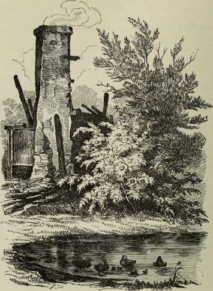
for han var en Maler, og tegnede saa det rygende Grus, de forkullede Bjælker op til den hældende Skorsten, for den hældede mer og mer, men allerforrest stod den store, blom-
strende Rosenhæk, den var rigtignok dejlig og var jo ogsaa ene Skyld i, at det hele blev tegnet.
Op ad Dagen kom forbi to af Graaspurvene, som vare fødte her. »Hvor er Huset?« sagde de, »hvor er Reden? — Pip, alting er brændt op, og vor stærke Broder er brændt med; det fik han, fordi han beholdt Reden. — Roserne ere slupne godt fra det! de staa endnu med røde Kinder. De sørge da ikke for Naboens Ulykke. Ja, jeg taler ikke til dem, og grimt er her, det er min Mening!« Saa fløj de.
Ud paa Efteraaret var det en dejlig Solskinsdag, man kunde ordentlig tro, man var midt i Sommeren. Der var saa tørt og rent i Gaarden foran den store Trappe hos Herremandens, og der gik Duerne, baade sorte og hvide og violette, de glinsede i Solskinnet, og de gamle Duemødre brusede sig op og sagde til Ungerne: »Staa i Gruppe, staa i Gruppe!« — for saa tog de sig bedre ud.
»Hvad er det smaa graa, der løber mellem os?« spurgte en gammel Due, som havde rødt og grønt igennem Øjnene. »Smaa graa! smaa graa!« sagde hun.
»Det er Spurve! skikkelige Dyr! vi have altid haft Ord for at være fromme, og saa faa vi lade dem pille op! — De tale ikke med og skrabe saa net med Benet.«
Ja, de skrabede, tre Gange skrabede de med det venstre Ben, men de sagde ogsaa Pip, og saa kendte de hverandre, det var tre Spurve fra det afbrændte Hus.
»Her er overmaade godt at æde!« sagde Spurvene.
Og Duerne gik rundt om hverandre, brystede sig og havde indvendig Mening.
»Ser du Brysteduen?« sagde den ene om den anden, »og ser du hende, hvor hun sluger Ærter? Hun faar for mange! hun faar de bedste! kurr! kun! ser du, hvor hun bliver skaldet i Kammen! ser du det søde, det arrige Dyr! knurre, knurre!« og saa skinnede paa dem alle sammen Øjnene røde af Arrighed. »Staa i Gruppe, staa i Gruppe! Smaa graa! smaa graa! Knurre, knurre, kurre!« gik det uophørligt, og saaledes gaar det endnu om tusinde Aar.
Graaspurvene spiste godt, og de hørte godt, ja, de stillede
sig endogsaa op, men det klædte ikke; mætte vare de; saa gik de fra Duerne og sagde indbyrdes deres Mening om dem, hoppede saa ind under Havestakittet, og da Døren der til Havestuen stod aaben, hoppede den ene op paa Dørtrinet, han var overmæt og derfor modig: »Pip!« sagde han, »det tør jeg!« — »Pip!« sagde den anden, »det tør jeg ogsaa og lidt til!« og saa hoppede han ind i Stuen. Der var ingen Folk derinde, det saa den tredie nok, og saa fløj han endnu længer op i Stuen og sagde: »Helt ind eller slet ikke! det er ellers en løjerlig Menneskerede den! og hvad her er stillet op! nej, hvad er det!«
Lige foran Spurvene blomstrede jo Roserne, de spejlede sig der i Vandet, og de kullede Bjælker laa op til den faldefærdige Skorsten. — Nej, hvad var dog dette! hvor kom det ind i Herregaardsstuen?
Og alle tre Spurve vilde flyve hen over Roserne og Skorstenen, men det var en flad Væg, de fløj imod; det hele var et Maleri, et stort, prægtigt Stykke, som Maleren havde udført efter sin lille Tegning.
»Pip!« sagde Spurvene, »det er ingenting! det ser bare ud! Pip! det er det skønne! Kan du begribe det, for jeg kan ikke!« og saa fløj de, for der kom Mennesker i Stuen.
Nu gik der baade Aar og Dag, Duerne havde mange Gange kurret, for ikke at sige knurret, de arrige Dyr! Graa-spurvene havde frosset om Vinteren og levet højt om Sommeren; de vare alle sammen forlovede eller gifte, eller hvad man nu vil kalde det. Unger havde de, og enhvers Unge var naturligvis den kønneste og den klogeste; en fløj her, og en fløj der, og mødtes de, saa kendtes de paa »Pip!« og tre Skrab med det venstre Ben. Den ældste af dem, det var nu saadan en gammel en, hun havde ingen Rede, og hun havde ingen Unger; hun vilde saa gerne engang til en stor By, og saa fløj hun til Kjøbenhavn. —
Der laa et stort Hus med mange Kulører; det laa lige ved Slottet og Kanalen, hvor der var Skibe med Æbler og Potter. Vinduerne vare bredere forneden end foroven, og kiggede Spurvene derind, saa var hver Stue, syntes dem,
ligesom om de saa ned i en Tulipan, alle mulige Kulører og Snirkler, og midt i Tulipanen stod hvide Mennesker; de vare af Marmor, nogle vare ogsaa af Gibs, men det kommer ud paa et for Spurveøjne. Oven paa Huset stod en Metalvogn med Metalheste for, og Sejrens Gudinde, ogsaa af Metal, kørte dem. Det var Thorvaldsens Museum.
»Hvor det skinner! hvor det skinner!« sagde Spurvefrøkenen, »det er nok det skønne! Pip! her er det dog større end en Paafugl!« hun huskede endnu fra lille af, hvad der var det største skønne, Moderen kendte. Og hun fløj lige ned i Gaarden; der var ogsaa prægtigt, der var malet Palmer og Grene op ad Væggene, og midt i Gaarden stod en blomstrende stor Rosenbusk; den hældede sine friske Grene med de mange Roser hen over en Grav, og hun fløj derhen, for der gik flere Spurve; »Pip!« og tre Skrab med det venstre Ben; den Hilsen havde hun mange Gange gjort i Aar og Dag, og ingen havde forstaaet den, for de, som ere skilte ad, de træffes ikke hver Dag; den Hilsen var bleven til Vane, men i Dag var der to gamle Spurve og en Unge, der sagde »Pip!« og skrabede med det venstre Ben.
»Ih, se god Dag, god Dag!« det var tre gamle fra Spurvereden og saa en lille en af Familien. »Skal vi træffes her!« sagde de. »Det er et fornemt Sted, men her er ikke meget at æde. Det er det skønne! Pip!«
Og der kom mange Folk fra Sideværelserne, hvor de prægtige Marmorskikkelser stod, og de gik hen til Graven, der gemte den store Mester, som havde formet Marmorstøtterne, og alle, som kom, stod med lysende Ansigter om Thorvaldsens Grav, og enkelte opsamlede de affaldne Rosenblade og gemte disse. Der var Folk langvejs fra; de kom fra det store England, fra Tyskland og Frankrig; den skønneste Dame tog en af Roserne og lagde den ved sit Bryst. Da troede Spurvene, at Roserne regerede her, at det hele Hus var bygget for deres Skyld, og det syntes de var rigtignok lidt for meget, men da Menneskene alle sammen gjorde af Roserne, saa vilde de ikke staa tilbage. »Pip!« sagde de, fejede Gulvet med deres Hale og saa med det ene Øje paa
NABOFAMILIERNE.
Roserne; længe saa de ikke, før de vare visse paa, at det var de gamle Naboer; og det var det ogsaa. Maleren, som havde tegnet Rosenbusken ved det nedbrændte Hus, havde siden ud paa Aaret faaet Lov til at grave den op og da givet Bygmesteren den, thi ingen Roser var dejligere; og han havde sat den paa Thorvaldsens Grav, hvor den, som Billedet paa det skønne, blomstrede og gav sine røde, duftende Blade at bæres som Erindring til fjerne Lande.
»Har I faaet Ansættelse herinde i Byen?« spurgte Spurvene. Og Roserne nikkede; de kendte de graa Naboer og bleve saa glade ved at se dem.
»Hvor det er velsignet at leve og blomstre og se gamle Venner og hver Dag milde Ansigter! Her er, ligesom om det hver Dag var en stor Helligdag!«
»Pip!« sagde Spurvene, »jo, det er de gamle Naboer! deres Herkomst fra Gadekæret huske vi! Pip! hvor de ere komne til Ære! Somme komme da ogsaa sovende til det. Og hvad rart der er ved saadan en rød Klat, veed jeg ikke! — Og der sidder da et vissent Blad, for det kan jeg se!«
Og saa nippede de til det, saa at Bladet faldt af, og friskere og grønnere stod Træet, og Roserne duftede i Solskinnet paa Thorvaldsens Grav, til hvis udødelige Navn deres Skønhed sluttede sig.
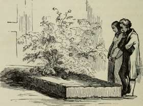
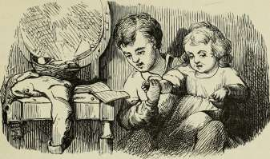
Ja, det var den lille Tuk, han hed egentlig ikke Tuk, men den Gang han ikke kunde tale rigtig endnu, kaldte han sig selv Tuk; det skulde hetyde Carl, og det er godt, man veed det; han skulde passe sin Søster Gustave, som var meget mindre end han, og saa skulde han ogsaa lære sin Lektie, men de to Ting vilde ikke gaa paa een Gang. Den stakkels Dreng sad med sin lille Søster paa Skødet og sang alle de Viser, han kunde, og imidlertid skottede Øjnene til Geografibogen, der laa aaben for ham; han skulde til i Morgen kunne udenad alle Byerne i Sjællands Stift og vide om dem alt, hvad der kunde vides.
Nu kom hans Moder hjem, for hun havde været ude, og hun tog den lille Gustave; Tuk løb til Vinduet og læste, saa at han næsten læste sig Øjnene ud, for det var nær ved at blive mørkt, og mere blev det, men Moder havde ikke Raad til at købe Lys.
»Der gaar den gamle Vadskerkone omme fra Strædet!« sagde Moderen, idet hun saa ud af Vinduet. »Hun kan knap bære sig selv, og saa maa hun bære Spanden fra Posten;
spring du ud, lille Tuk, og vær en velsignet Dreng! hjælp den gamle Kone!«
Og Tuk sprang lige straks og hjalp, men da han saa kom hjem, var det mørk Aften, Lys var der ikke at snakke om, han skulde i sin Seng; det var en gammel Slagbænk; i den laa han, og der tænkte han paa sin Geografilektie; Sjællands Stift og alt hvad Læreren havde fortalt. Det skulde rigtignok have været læst, men det kunde han jo ikke nu. Geografibogen stak han ind under sin Hovedpude, for han havde hørt, at det skulde hjælpe betydeligt til at huske sin Lektie, men det er ikke til at stole paa.
Der laa han nu og tænkte og tænkte, og saa var det lige med eet, som om nogen kyssede ham paa Øjne og Mund, han sov og sov dog ikke; det var, ligesom om han saa den gamle Vadskerkones milde Øjne se paa ham, og hun sagde: »Det vilde være en stor Synd, om du ikke skulde kunne din Lektie! Du hjalp mig, nu skal jeg hjælpe dig, og Vor Herre vil altid gøre det!«
Og lige med eet saa kriblede og krablede Bogen under Hovedet paa lille Tuk.
»Kykeleky! put! put!« det var en Høne, der kom, og det fra Kjøge By. »Jeg er en af Kjøgehøns!« og saa sagde den hvor mange Indvaanere, og om Slaget, der havde staaet, og det var nu ikke noget at tale om.
»Krible krable, bums!« der dumpede en; det var en Fugl af Træ, som nu kom; det var Papegøjen fra Fugleskydningen i Præstø. Den sagde, at der var lige saa mange Indvaanere, som den havde Søm i Livet; og den var noget stolt: »Thorvaldsen har boet paa Hjørnet af mig. Bums! jeg ligger dejligt!«
Men lille Tuk laa ikke, han var med eet til Hest. I Galop, i Galop gik det. En prægtigklædt Ridder, med skinnende Hjælm og vajende Fjerbusk, havde ham foran sig paa Hesten, og de red gennem Skoven til den gamle By Vordingborg, og den var en stor, en levende By; høje Taarne knejsede paa Kongeborgen, og Lysene skinnede langt ud gen-
365
nem Vinduerne; derinde var Sang og Dans; Kong Valdemar og stadselige unge Hoffrøkener gik i Dansen. — Det blev Morgen, og ligesom Solen kom, sank Byen hen og Kongens
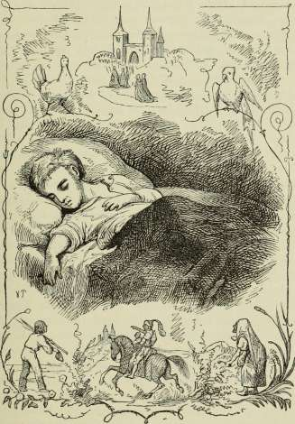
Slot, det ene Taarn efter det andet, til sidst stod kun et eneste paa Banken, hvor Slottet havde staaet, og Byen var saa lille bitte og saa fattig, og Skoledrengene kom med deres
Bøger under Armen og sagde »to Tusinde Indvaanere«, men det var ikke sandt, saa mange var der ikke.
Og lille Tuk laa i sin Seng, han syntes, at han drømte, og at han ikke drømte; men nogen var der tæt ved ham:
»Lille Tuk! lille Tuk!« blev der sagt; det var en Sømand, en ganske lille Person, som om det kunde være en Kadet, men det var ikke en Kadet. »Jeg skal hilse saa meget flittig fra Korsør, den er en By, som er i Opkomst; den er en levende By, den har Dampskib og Postvogn; engang skulde den altid kaldes ækel, men det var gammel Mening. »»Jeg ligger ved Havet,«« siger Korsør, »»jeg har Landevej, og jeg har Lystskov, og jeg har født en Digter, som var morsom, og det ere de ikke alle. Jeg har villet sende et Skib rundt om Jorden, jeg gjorde det ikke, men kunde have gjort det, og saa lugter jeg saa dejlig, lige ved Porten der blomstre de yndigste Roser!««
Lille Tuk saa dem, det blev rødt og grønt for hans Øjne, men da der kom Ro i Kulørerne, var det en hel skovgroet Skrænt tæt ved den klare Fjord; og ovenover laa en prægtig, gammel Kirke med to høje, spidse Kirketaarne; fra Skrænten sprang Kilderne i tykke Vandstraaler, saa at det plaskede efter, og tæt ved sad en gammel Konge med Guldkrone om sit lange Haar; det var Kong Hroar ved Kilderne; det var ved Roskilde By, som man kalder den nu. Og hen over Skrænten, ind i den gamle Kirke, gik alle Danmarks Konger og Dronninger Haand i Haand, alle med Guldkrone paa, og Orgelet spillede, og Kilderne rislede. Den lille Tuk saa alt, hørte alt. »Glem ikke Stænderne!« sagde Kong Hroar.
Lige med eet var alting borte igen; ja, hvor blev det af! det var, ligesom man vender et Blad i en Bog. Og nu stod der en gammel Kone, det var en Lugekone, hun kom fra Sorø, hvor der vokser Græs paa Torvet. Hun havde sit graa Lærreds Forklæde over Hovedet og ned ad Ryggen; det var saa vaadt, det maatte have regnet. »Ja, det har det!« sagde hun, og saa kunde hun noget morsomt af Holbergs Komedier, og hun vidste om Valdemar og Absalon; men lige
med eet saa krøb hun sammen, rokkede med Hovedet, det var, ligesom om hun vilde springe. »Koaks!« sagde hun, »det er vaadt, det er vaadt, det er gravstille godt — i Sorø!« hun var lige med eet en Frø, »Koaks!« og saa var hun den gamle Kone igen. »Man maa klæde sig efter Vejret!« sagde hun. »Det er vaadt, det er vaadt! min By er ligesom en Flaske, man kommer ind ved Proppen, og der maa man ud igen! jeg har haft Maller, og nu har jeg friske rødmussede Drenge paa Bunden af Flasken; der lære de Visdom: Græsk! Græsk! Hebraisk! Koaks!« det klang, ligesom naar Frøerne synge, eller man gaar i Mosevand med store Støvler. Det var altid den samme Lyd, saa ens, saa kedelig, saa kedelig, at lille Tuk faldt i en ordentlig Søvn, og den kunde han have godt af.
Men ogsaa i denne Søvn kom en Drøm, eller hvad det nu var: hans lille Søster Gustave med de blaa Øjne og det gule krøllede Haar var med eet en voksen, dejlig Pige, og uden at have Vinger paa kunde hun flyve, og de fløj hen over Sjælland, over de grønne Skove og de blaa Vande.
»Hører du Hanegal, lille Tuk! Kykeleky! Hønsene flyve op fra Kjøge By! Du faar en Hønsegaard, saa stor, saa stor, du vil ikke lide Sult og Nød! Papegøjen skal du skyde, som man siger, du bliver en rig og lykkelig Mand! din Gaard skal knejse som Kong Valdemars Taarn, og rigt skal den bygges med Billedstøtter af Marmor, som dem fra Præstø-Hjørne. Du forstaar mig nok. Dit Navn skal med Bos flyve vidt ud om Verden som Skibet, der skulde have gaaet fra
Korsør, og i Boskilde By »»husk paa Stænderne!««
sagde Kong Hroar; der skal du tale godt og klogt, lille Tuk, og naar du saa kommer engang i din Grav, skal du sove saa stille — —.«
»— Som om jeg laa i Sorø!« sagde Tuk, og saa vaag-nede han; det var klar Morgen, han kunde ikke huske det mindste af sin Drøm, men det skulde han heller ikke, for man maa ikke vide hvad der kommer.
Og han sprang ud af Sengen og læste i sin Bog og kunde
LILLE TUK.
saa sin Lektie lige straks. Og den gamle Vadskerkone stak Hovedet ind ad Døren, nikkede til ham og sagde:
»Tak for i Gaar, du velsignede Barn! Vor Herre lade din bedste Drøm blive opfyldt!«
Den lille Tuk vidste slet ikke, hvad han havde drømt, men se, det vidste Vor Herre!
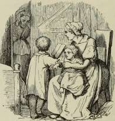
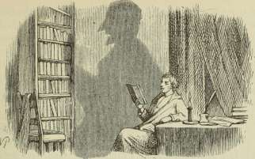
Skyggen.
Ide hede Lande der kan rigtignok Solen brænde! Folk blive ganske mahognibrune; ja, i de allerhedeste Lande brændes de til Negere, men det var nu kun til de hede Lande, en lærd Mand var kommen fra de kolde; der troede han nu, at han kunde løbe om ligesom derhjemme, jo, det blev han snart vænnet af med. Han og alle fornuftige Folk maatte blive inde. Vinduesskodder og Døre bleve lukkede den hele Dag; det saa ud, som hele Huset sov, eller der ingen var hjemme. Den smalle Gade med de høje Huse, hvor han boede, var nu ogsaa bygget saaledes, at Solskinnet fra Morgen til Aften maatte ligge der, det var virkelig ikke til at holde ud! — Den lærde Mand fra de kolde Lande, det var en ung Mand, en klog Mand, han syntes, han sad i en gloende Ovn; det tog paa ham, han blev ganske mager, selv hans Skygge krøb ind, den blev meget mindre end hjemme, Solen tog ogsaa paa den. — De levede først op om Aftenen, naar Solen var nede.
Det var ordentlig en Fornøjelse at se paa; saa snart Lyset blev bragt ind i Stuen, strakte Skyggen sig helt op ad Væggen, ja, endog helt hen ad Loftet, saa lang gjorde den sig, den
maatte strække sig for at komme til Kræfter. Den lærde gik ud paa Altanen for at strække sig der, og alt som Stjernerne kom frem i den dejlige klare Luft, var det for ham, som kom han til Live igen. Paa alle Altaner i Gaden — og i de varme Lande har hvert Vindue en Altan — kom Folk frem, for Luft maa man have, selv om man er vant til at være Mahogni! Der blev saa levende oppe og nede. Skomagere og Skræddere, alle Folk flyttede ud paa Gaden, der kom Bord og Stol, og Lyset brændte, ja, over tusind Lys brændte, og den ene talte, og den anden sang, og Folk spadserede, Vognene kørte, Æslerne gik: klingelingeling! de havde Klokker paa; der blev Lig begravede med Psalmesang, Gadedrengene skød med Troldkællinger, og Kirkeklokkerne ringede, jo, der var rigtignok levende nede paa Gaden. Kun i det ene Hus, som laa lige over for, hvor den fremmede, lærde Mand boede, var der ganske stille; og dog boede der nogen, for der stod paa Altanen Blomster; de groede saa dejligt i den Solhede, og det kunde de ikke, uden at de bleve vandede, og nogen maatte jo vande dem; Folk maatte der være. Døren der ovre kom ogsaa op ud paa Aftenen, men der var mørkt derinde, i det mindste i det forreste Værelse, dybere inde fra lød Musik. Den fremmede, lærde Mand syntes, den var ganske mageløs, men det kunde nu ogsaa gerne være, at han kun bildte sig det ind, for han fandt alting mageløst derude i de varme Lande, naar der kun ingen Sol havde været. Den fremmedes Vært sagde, at han ikke vidste, hvem der havde lejet Genboens Hus, man ♦saa jo ingen Folk, og hvad Musikken angik, syntes han, at den var gruelig kedelig. »Det er, ligesom om en sad og øvede sig paa et Stykke, han ikke kan komme ud af, altid det samme Stykke. »»Jeg faar det dog ud!«« siger han nok, men han faar det dog ikke ud, hvor længe han spiller.«
En Nat vaagnede den fremmede, han sov for aaben Altandør, Gardinet foran den løftede sig i Vinden, og han syntes, at der kom en forunderlig Glans fra Genboens Altan, alle Blomsterne skinnede som Flammer i de dejligste Farver, og midt imellem Blomsterne stod en slank, yndig Jomfru, det var, som om ogsaa hun lyste; det skar ham virkelig i Øjnene,
han lukkede dem nu ogsaa saa forfærdelig meget op og kom lige af Søvnen; i eet Spring var han paa Gulvet, ganske sagte kom han bag Gardinet, men Jomfruen var borte, Glansen var borte; Blomsterne skinnede slet ikke, men stod meget godt som altid; Døren var paa Klem, og dybt inde klang Musikken saa blød og dejlig, man kunde ordentlig falde hen i søde Tanker derved. Det var dog ligesom en Trolddom, og hvem boede der? Hvor var den egentlige Indgang? Hele Stueetagen var Butik ved Butik, og der kunde Folk jo dog ikke altid løbe igennem.
En Aften sad den fremmede ude paa sin Altan, inde i Stuen bag ved ham brændte Lyset, og saa var det jo ganske naturligt, at Skyggen af ham gik over paa Genboens Væg; jo, der sad den lige over for mellem Blomsterne paa Altanen, og naar den fremmede rørte sig, saa rørte Skyggen sig ogsaa, for det gør den. —
»Jeg tror, min Skygge er det eneste levende, man ser derovre!« sagde den lærde Mand. »Se, hvor net den sidder mellem Blomsterne, Døren staar halvt paa Klem, nu skulde Skyggen være saa snild at gaa indenfor, se sig om, og saa komme og fortælle mig, hvad den havde set! ja, du skulde gøre Gavn!« sagde han i Spøg, »vær saa god at træde indenfor! naa! gaar du?« og saa nikkede han til Skyggen, og Skyggen nikkede igen. »Ja saa gaa, men bliv ikke borte!« og den fremmede rejste sig, og hans Skygge ovre paa Genboens Altan rejste sig ogsaa; og den fremmede drejede sig, og Skyggen drejede sig ogsaa; ja, dersom nogen ordentlig havde lagt Mærke dertil, da havde de tydeligt kunnet se, at Skyggen gik ind ad den halvaabne Altandør hos Genboen, lige idet den fremmede gik ind i sin Stue og lod det lange Gardin falde ned efter sig.
Næste Morgen gik den lærde Mand ud for at drikke Kaffe og læse Aviser. »Hvad er det?« sagde han, da han kom ud i Solskinnet, »jeg har jo ingen Skygge! saa er den virkelig gaaet i Aftes og ikke kommen igen; det er noget kedeligt noget!«
Og det ærgrede ham, men ikke saa meget fordi at Skyggen var borte, men fordi han vidste, at der var en Historie til om
24*
en Mand uden Skygge, den kendte jo alle Folk hjemme i de kolde Lande, og kom nu den lærde Mand der og fortalte sin, saa vilde de sige, at han gik og lignede efter, og det behøvede han ikke. Han vilde derfor slet ikke tale derom, og det var fornuftigt tænkt.
Om Aftenen gik han ud paa sin Altan igen, Lyset havde han meget rigtig sat bag ved sig, for han vidste, at Skyggen vil altid have sin Herre til Skærm, men han kunde ikke lokke den; han gjorde sig lille, han gjorde sig stor, men der var ingen Skygge, der kom ingen ; han sagde: hm! hm! men det hjalp ikke.
Ærgerligt var det, men i de varme Lande, der vokser nu alting saa hurtigt, og efter otte Dages Forløb mærkede han til sin store Fornøjelse, at der voksede ham en ny Skygge ud fra Benene, naar han kom i Solskin, Roden maatte være bleven siddende. Efter tre Uger havde han en ganske taalelig Skygge, der, da han begav sig hjem til de nordlige Lande, vokste paa Rejsen mer og mer, saa at den til sidst var saa lang og saa stor, at det halve var nok.
Saa kom den lærde Mand hjem, og han skrev Bøger om hvad der var sandt i Verden, og om hvad der var godt og hvad der var smukt, og der gik Dage, og der gik Aar; der gik mange Aar.
Da sidder han en Aften i sin Stue, og saa banker det ganske sagte paa Døren.
»Kom ind!« sagde han, men der kom ingen; saa lukker han op, og der stod for ham saadant et overordentlig magert Menneske, saa han blev ganske underlig. For Resten var Mennesket særdeles fint klædt paa, det maatte være en fornem Mand.
»Hvem har jeg den Ære at tale med?« spurgte den lærde.
»Ja, det tænkte jeg nok,« sagde den fine Mand, »at De ikke kendte mig! jeg er bleven saa meget Legeme, jeg har ordentlig faaet Kød og Klæder. De har nok aldrig tænkt at se mig i saadan en Velmagt. Kender De ikke Deres gamle Skygge? Ja, De har vist ikke troet, at jeg mere kom igen. Mig er det gaaet særdeles vel, siden jeg sidst var hos Dem,
jeg er i alle Henseender bleven meget formuende! skal jeg købe mig fri fra Tjenesten, saa kan jeg!« og saa raslede han med et helt Bundt kostbare Signeter, som hang ved Uret, og han stak sin Haand ind i den tykke Guldkæde, han bar om Halsen; nej, hvor alle Fingrene glimrede med Diamantringe! og det var alt sammen virkeligt.
»Nej, jeg kan ikke komme til mig selv!« sagde den lærde Mand, »hvad er dog alt det!«
»Ja, noget almindeligt er det ikke!« sagde Skyggen, »men De selv hører jo heller ikke til det almindelige, og jeg, det veed De nok, har fra Barnsben traadt i Deres Fodspor. Saa snart De fandt, jeg var moden til at gaa alene ud i Verden, gik jeg min egen Vej; jeg er i de allerbrillanteste Omstændigheder, men der kom et Slags Længsel over mig efter engang at se Dem, før De dør, De skal jo dø! jeg vilde ogsaa gerne gense disse Lande, for man holder dog altid af Fædrelandet! — Jeg veed, De har faaet en anden Skygge igen, har jeg noget at betale til den eller Dem? De vil bare være saa god at sige det.«
»Nej, er det virkelig dig!« sagde den lærde Mand, »det er dog højst mærkværdigt! aldrig havde jeg troet, at ens gamle Skygge kunde komme igen som Menneske!«
»Sig mig hvad jeg har at betale!« sagde Skyggen, »for jeg vil nødig staa i noget Slags Gæld!«
»Hvor kan du tale saaledes!« sagde den lærde Mand, »hvad Gæld er her at snakke om! vær saa fri som nogen! jeg glæder mig overordentlig ved din Lykke! sid ned, gamle Ven og fortæl mig bare lidt om, hvorledes det er gaaet til, og hvad du saa ovre hos Genboens der i de varme Lande!« —
»Ja, det skal jeg fortælle Dem,« sagde Skyggen og satte sig ned, »men saa maa De ogsaa love mig, at De aldrig til nogen her i Byen, hvor De endogsaa træffer mig, siger, at jeg har været Deres Skygge! jeg har i Sinde at forlove mig; jeg kan føde mere end een Familie!« —
»Vær ganske rolig!« sagde den lærde Mand, »jeg skal ikke sige nogen, hvem du egentlig er; her er min Haand! jeg lover det, og en Mand et Ord!«
»Et Ord en Skygge!« sagde Skyggen, thi saaledes maatte den jo tale.
Det var ellers virkelig ganske mærkværdigt, hvor meget Menneske den var; ganske sortklædt var den og i det allerfineste sorte Klæde, lakerede Støvler og Hat, der kunde smække sammen, saa at den blev bar Puld og Skygge, ikke at tale om, hvad vi allerede veed, her var Signeter, Guldhalskæde og Diamantringe; jo, Skyggen var overordentlig godt klædt paa, og det var just det, som gjorde, at den var ganske et Menneske.
»Nu skal jeg fortælle!« sagde Skyggen, og saa satte den siue Ben med de lakerede Støvler saa haardt, den kunde, ned paa Ærmet af den lærde Mands ny Skygge, der laa som en Puddelhund ved hans Fødder, og det var nu enten af Hovmod eller maaske for at faa den til at hænge ved; og den liggende Skygge holdt sig saa stille og rolig, for ret at høre efter; den vilde nok vide, hvorledes man saaledes kunde komme løs og tjene sig op til sin egen Herre.
»Veed De, hvem der boede i Genboens Hus?« sagde Skyggen, »det var den dejligste af alle, det var Poesien! Jeg var der i tre Uger, og det var lige saa virkende, som om man levede i tre Tusind Aar og læste alt hvad der var digtet og skrevet, for det siger jeg, og det er rigtigt. Jeg har set alt, °g J e g vee d alt!«
»Poesien!« raabte den lærde Mand, »ja, ja — hun er tit Eremit i de store Byer! Poesien! ja, jeg har set hende et eneste kort Øjeblik, men Søvnen sad mig i Øjnene! hun stod paa Altanen og skinnede, som Nordlyset skinner; fortæl, fortæl! Du var paa Altanen, du gik ind ad Døren og saa !«
»Saa var jeg i Forgemakket!« sagde Skyggen. »De har altid siddet og set over til Forgemakket. Der var slet intet Lys, der var et Slags Tusmørke, men den ene Dør stod aaben lige for den anden i en lang Række Stuer og Sale; og der var oplyst, jeg var rent bleven slaaet ihjel af Lys, var jeg kommen helt ind til Jomfruen; men jeg var besindig, jeg gav mig Tid, og det skal man gøre!«
»Og hvad saa du saa?« spurgte den lærde Mand.
»Jeg saa alting, og jeg skal fortælle Dem det, men, — det er slet ingen Stolthed af mig, men — som fri og med de Kundskaber jeg har, ikke at tale om min gode Stilling, mine fortræffelige Omstændigheder, — saa ønskede jeg gerne, at De vilde sige De til mig!«
»Om Forladelse!« sagde den lærde Mand, »det er gammel Vane, som sidder fast! — De har fuldkommen Ret! og jeg skal huske det! men nu fortæller De mig alt hvad De saa!« —
»Alting!« sagde Skyggen, »for jeg saa alt, og jeg veed alt.«
»Hvorledes saa der ud i de inderste Sale?« spurgte den lærde Mand. »Var der som i den friske Skov? Var der som i en hellig Kirke? Vare Salene som den stjerneklare Himmel, naar man staar paa de høje Bjerge?«
»Alting var der!« sagde Skyggen. »Jeg gik jo ikke ganske helt ind, jeg blev i det forreste Værelse, i Tusmørket, men der stod jeg særdeles godt, jeg saa alting, og jeg veed alting! Jeg har været ved Poesiens Hof, i Forgemakket.«
»Men hvad saa De? Gik gennem de store Sale alle Oldtidens Guder. Kæmpede der de gamle Helte? Legede søde Børn og fortalte deres Drømme?«
»Jeg siger Dem, jeg var der, og De begriber, jeg saa alting, hvad der var at se! var De kommen der over, var De ikke bleven til Menneske, men det blev jeg! og tillige lærte jeg at kende min inderste Natur, mit medfødte, det Familieskab, jeg havde med Poesien. Ja, den Gang jeg var hos Dem, tænkte jeg ikke over det, men altid, De veed det, naar Sol gik op, og Sol gik ned, blev jeg saa underlig stor; i Maaneskin var jeg næsten ved at være tydeligere end De selv; jeg forstod ikke den Gang min Natur, i Forgemakket gik det op for mig! jeg blev Menneske! — Moden kom jeg ud, men De var ikke længer i de varme Lande; jeg skammede mig som Menneske ved at gaa, som jeg gik, jeg trængte til Støvler, til Klæder, til hele denne Menneske-Fernis, som gør et Menneske kendeligt. — Jeg tog Vej, ja, Dem siger jeg det, De sætter det jo ikke i nogen Bog, jeg tog Vej til Kagekonens Skørt, under det skjulte
jeg mig; Konen tænkte ikke paa, hvor meget hun gemte, først om Aftenen gik jeg ud; jeg løb om i Maaneskinnet paa Gaden; jeg gjorde mig lang op ad Muren, det kildrer saa dejligt i Ryggen! jeg løb op, og jeg løb ned, kiggede ind ad de højeste Vinduer, ind i Salen og paa Taget, jeg kiggede, hvor ingen kunde kigge, og jeg saa hvad ingen andre saa, hvad ingen skulde se! Det er i Grunden en nedrig Verden! jeg vilde ikke være Menneske, dersom det nu ikke engang var antaget, at det var noget at være det! Jeg saa det allerutænkeligste hos Konerne, hos Mændene, hos Forældrene og hos de søde, mageløse Børn; — jeg saa,« sagde Skyggen, >hvad ingen Mennesker maatte vide, men hvad de alle sammen saa gerne vilde vide, ondt hos Naboen. — Havde jeg skrevet en Avis, den var bleven læst! men jeg skrev lige til Personen selv, og der blev en Forfærdelse i alle Byer, hvor jeg kom. De bleve saa bange for mig, og de holdt saa overordentlig af mig. Professorerne gjorde mig til Professor, Skrædderne gav mig ny Klæder, jeg er godt forsynet; Møntmesteren slog Mønt for mig, og Konerne sagde, at jeg var saa køn! og saa blev jeg den Mand, jeg er; og nu siger jeg Farvel; her er mit Kort, jeg bor paa Solsiden og er altid hjemme i Regnvejr!« og saa gik Skyggen.
»Det var dog mærkeligt!« sagde den lærde Mand.
Aar og Dag gik, saa kom Skyggen igen.
»Hvorledes gaar det?« spurgte den.
»Ak,« sagde den lærde Mand, »jeg skriver om det sande og det gode og det skønne, men ingen bryder sig om at høre sligt, jeg er ganske fortvivlet, for jeg tager mig det saa nær!«
»Men det gør jeg ikke!« sagde Skyggen, »jeg bliver fed, og det er det, man skal se at blive! ja, De forstaar Dem ikke paa Verden. De bliver daarlig ved det. De maa rejse! jeg gør en Rejse til Sommer; vil De med? Jeg gad nok have en Rejsekammerat! vil De rejse med som Skygge? Det skal være mig en stor Fornøjelse at have Dem med, jeg betaler Rejsen!«
»Det gaar vel vidt!« sagde den lærde Mand.
»Det er, ligesom man tager det!« sagde Skyggen. »De vil have grumme godt af at rejse! vil De være min Skygge, saa skal De faa alting frit paa Rejsen!«
»Det er for galt!« sagde den lærde Mand.
»Men saadan er nu Verden!« sagde Skyggen, »og saaledes bliver den!« og saa gik Skyggen.
Den lærde Mand havde det slet ikke godt, Sorg og Plage fulgte ham, og hvad han talte om det sande og det gode og det skønne, det var for de fleste ligesom Roser for en Ko! — han var ganske syg til sidst.
»De ser virkelig ud ligesom en Skygge!« sagde Folk til ham, og det gøs i den lærde Mand, for han tænkte ved det.
»De skal tage til et Bad!« sagde Skyggen, som kom og besøgte ham, »der er ikke andet for! jeg vil tage Dem med for gammelt Bekendtskabs Skyld; jeg betaler Rejsen, og De gør Beskrivelsen og er saadan lidt morsom for mig paa Vejen; jeg vil til et Bad, mit Skæg gror ikke ud, som det skulde, det er ogsaa en Sygdom, og Skæg maa man have! Vær De nu fornuftig og tag imod Tilbudet, vi rejse jo som Kammerater.«
Og saa rejste de; Skyggen var da Herre, og Herren var da Skygge; de kørte med hinanden, og de red og gik sammen, Side ved Side, for ud og bag efter, saaledes som Solen stod; Skyggen vidste altid at holde sig paa Herrepladsen; og det tænkte den lærde Mand nu ikke saadan over; han var et meget godt Hjerte og særdeles mild og venlig, og da sagde han en Dag til Skyggen: »Da vi nu saaledes ere blevne Rejsekammerater, som vi er det, og vi tillige ere voksede op fra Barndommen sammen, skulle vi saa ikke drikke dus, det er dog mere fortroligt!«
»De siger noget!« sagde Skyggen, som jo nu var den egentlige Herre. »Det er meget ligefremt og velment sagt, jeg vil være lige saa velmenende og ligefrem. De, som en lærd Mand, veed vist nok, hvor underlig Naturen er. Somme Mennesker kunne ikke taale at røre ved graat Papir, saa faa de ondt; andre gaar det gennem alle Lemmer, naar man lader et Søm gnide mod en Glasrude; jeg har lige saadan en Følelse ved at høre Dem sige du til mig, jeg føler mig ligesom
trykket til Jorden i min første Stilling hos Dem. De ser, at det er en Følelse, det er ikke Stolthed; jeg kan ikke lade Dem sige du til mig, men jeg skal gerne sige du til Dem, saa er det halve gjort!«
Og saa sagde Skyggen du til sin forrige Herre.
»Det er dog vel galt,« tænkte han, »at jeg maa sige De, og han siger du!« men nu maatte han holde ud.
Saa kom de til et Bad, hvor der var mange fremmede og imellem disse en dejlig Kongedatter, som havde den Sygdom, at hun saa alt for godt, og det var nu saa ængsteligt.
Lige straks mærkede hun, at han, der var kommen, var en ganske anden Person end alle de andre; »han er her for at faa sit Skæg til at vokse, siger man, men jeg ser den rette Aarsag, han kan ikke kaste Skygge.«
Nysgerrig var hun bleven; og saa gav hun sig straks paa Spadsereturen i Tale med den fremmede Herre. Som en Kongedatter behøvede hun ikke at gøre mange Omstændigheder, og saa sagde hun: »Deres Sygdom er, at De ikke kan kaste Skygge.«
»Dere-s kongelige Højhed maa være betydelig i Bedring!« sagde Skyggen, »jeg veed, Deres Onde er, at De ser alt for godt, men det har tabt sig, De er helbredet, jeg har just en ganske usædvanlig Skygge; ser De ikke den Person, som altid gaar med mig? Andre Mennesker have en almindelig Skygge, men jeg holder ikke af det almindelige. Man giver sin Tjener finere Klæde i Liberiet, end man selv bruger, og saaledes har jeg ladet min Skygge pudse op til Menneske; ja. De ser, at jeg endogsaa har givet ham en Skygge. Det er meget kostbart, men jeg holder af at have noget for mig selv!« —
»Hvad!« tænkte Prinsessen, »skulde jeg virkelig være kommen mig? Dette Bad er det første, der er til! Vandet har i vor Tid ganske forunderlige Kræfter. Men jeg tager ikke bort, for nu bliver her morsomt; den fremmede synes jeg overordentligt om. Bare hans Skæg ikke vokser, for saa rejser han!«
Om Aftenen i den store,Balsal dansede Kongedatteren og Skyggen. Hun var let, men han var endnu lettere, saadan
en Danser havde hun aldrig haft. Hun sagde ham, fra hvad Land hun var, og han kendte Landet, han havde været der, men da var hun ikke hjemme; han havde kigget ind ad Vinduerne foroven og forneden, han havde set baade det ene og det andet, og saa kunde han svare Kongedatteren og gøre Antydninger, saa hun blev ganske forundret; han maatte være den viseste Mand paa hele Jorden; hun fik saadan en Agtelse for hvad han vidste, og da de saa dansede igen, saa blev hun forlibt, og det kunde Skyggen godt mærke, for hun var færdig at se lige igennem ham. Saa dansede de nok engang, og saa var hun lige ved at sige det, men hun var besindig, hun tænkte paa sit Land og Rige og paa de mange Mennesker, hun skulde regere over. »En vis Mand er han,« sagde hun til sig selv, »det er godt; og dejligt danser han, det er ogsaa godt; men mon han har grundige Kundskaber, det er lige saa vigtigt! han maa eksamineres.« Og saa begyndte hun saa smaat at spørge ham om noget af det allervanskeligste, hun kunde ikke selv have svaret paa det; og Skyggen gjorde et ganske underligt Ansigt.
»Det kan De ikke svare paa!« sagde Kongedatteren.
»Det hører til min Børnelærdom,« sagde Skyggen, »jeg tror endog, min Skygge derhenne ved Døren kan svare derpaa.«
»Deres Skygge!« sagde Kongedatteren, »det vilde være højst mærkeligt!«
»Ja, jeg siger ikke bestemt, at han kan,« sagde Skyggen, »men jeg skulde tro det, han har nu i saa mange Aar fulgt mig og hørt efter, — jeg skulde tro det! men Deres kongelige Højhed tillader, at jeg gør Dem opmærksom paa, at han har saa megen Stolthed af at gaa for et Menneske, at naar han skal være i rigtigt Humør, og det maa han være for at svare godt, saa maa han behandles ganske som et Menneske.«
»Det kan jeg godt lide!« sagde Kongedatteren.
Og saa gik hun hen til den lærde Mand ved Døren, og hun talte med ham om Sol og Maane, og om Menneskene baade udenpaa og indeni, og han svarede saa klogt og godt.
»Hvad det maa være for en Mand, der har saa vis en Skygge!« tænkte hun, »det vilde være en ren Velsignelse for mit Folk og Rige, om jeg valgte ham til min Gemal; — jeg gør det!«
Og de vare snart enige, baade Kongedatteren og Skyggen, men ingen skulde vide derom, før hun kom hjem i sit eget Rige.
»Ingen, ikke engang min Skygge!« sagde Skyggen, og det havde han nu saadan sine egne Tanker ved. —
Saa vare de i Landet, hvor Kongedatteren regerede, naar hun var hjemme.
»Hør min gode Ven!« sagde Skyggen til den lærde Mand, »nu er jeg bleven saa lykkelig og mægtig, som nogen kan blive, nu vil jeg ogsaa gøre noget særdeles for dig! Du skal altid bo hos mig paa Slottet, køre med mig i min kongelige Vogn og have hundrede Tusinde Rigsdaler om Aaret; men saa maa du lade dig kalde Skygge af alle og enhver; du maa ikke sige, at du har nogensinde været Menneske, og een Gang om Aaret, naar jeg sidder paa Altanen i Solskin og lader mig se, maa du ligge ved mine Fødder, som en Skygge skal; jeg kan sige dig, jeg gifter Kongedatteren; i Aften skal Brylluppet holdes.«
»Nej, det er dog alt for galt!« sagde den lærde Mand, »det vil jeg ikke, det gør jeg ikke! det er at bedrage hele Landet og Kongedatteren med! Jeg siger alting! at jeg er Mennesket, og at du er Skyggen, du er bare klædt paa!«
»Det er der ingen, som tror!« sagde Skyggen, »vær nu fornuftig, ellers kalder jeg paa Vagten!« —
»Jeg gaar lige til Kongedatteren!« sagde den lærde Mand. »Men jeg gaar først!« sagde Skyggen, »og du gaar i Arrest!« — og det maatte han, for Skildvagterne lystrede ham, som de vidste Kongedatteren vilde have.
»Du ryster!« sagde Kongedatteren, da Skyggen kom ind til hende, »er der sket noget? Du maa ikke blive syg til i Aften, nu vi skulle have Bryllup.«
»Jeg har oplevet det grueligste, der kan opleves!« sagde Skyggen, »tænk dig — ja, saadan en stakkels Skyggehjerne kan ikke holde meget ud; — tænk dig, min Skygge er bleven
SKYGGEN.
381
gal, han tror, at han er Mennesket, og at jeg — tænk dig bare, — at jeg er hans Skygge!«
»Det er frygteligt!« sagde Prinsessen, »han er dog spærret inde?«
»Det er han! Jeg er bange, han kommer sig aldrig.«
»Stakkels Skygge!« sagde Prinsessen, »han er meget ulykkelig; det er en sand Velgerning at befri ham fra den Smule Liv, han har, og naar jeg rigtig tænker over det, saa tror jeg, det bliver nødvendigt, at det bliver gjort af med ham i al Stilhed!«
»Det er rigtignok haardt!« sagde Skyggen, »for det var en tro Tjener!« og saa gav han ligesom et Suk.
»De er en ædel Karakter!« sagde Kongedatteren.
Om Aftenen var hele Byen illumineret, og Kanonerne gik af: Bum! og Soldaterne præsenterede Gevær. Det var et Bryllup! Kongedatteren og Skyggen gik ud paa Altanen for at lade sig se og faa nok engang Hurra.
Den lærde Mand hørte ikke noget til alt det, for ham havde de taget Livet af. —
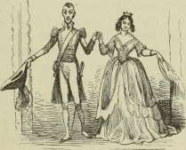
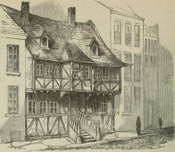
Det gamle Hus.
Der var omme i Gaden et gammelt, gammelt Hus, det var næsten tre Hundrede Aar, det kunde man læse sig til paa Bjælken, hvor Aarstallet var skaaret ud tillige med Tulipaner og Humleranker; der stod hele Vers bogstaverede som i gamle Dage, og over hvert Vindue var der i Bjælken snittet et Ansigt, som vrængede; den ene Etage gik et langt Stykke ud over den anden, og lige under Taget var en Blyrende med Dragehoved; Regnvandet skulde løbe ud af Gabet, men det løb ud af Maven, for der var Hul paa Renden.
Alle de andre Huse i Gaden vare saa ny og saa nette, med store Ruder og glatte Vægge, man kunde nok se, at de vilde ikke have noget at gøre med det gamle Hus; de tænkte nok: »Hvor længe skal det Skrummel staa til Spektakel her i Gaden; saa løber Karnappen saaledes ud, at ingen fra vore Vinduer kan se, hvad der sker i den Kant; Trappen er saa
bred som til et Slot og saa høj som til et Kirketaarn. Jerngelænderet ser jo ud som Døren til en gammel Begravelse, og saa har det Messingknapper. Det er flovt!«
Lige over for i Gaden var ogsaa ny og nette Huse, og de tænkte som de andre, men ved Vinduet her sad en lille Dreng med friske, røde Kinder, med klare, straalende Øjne, han syntes rigtignok bedst om det gamle Hus, og det baade i Solskin og i Maaneskin. Og saa han over paa Muren, hvor Kalken var gaaet af, saa kunde han sidde og udfinde der alle de underligste Billeder, akkurat hvorledes Gaden havde set ud før med Trapper, Karnapper og spidse Gavle; han kunde se Soldater med Hellebarder, og Tagrender, der løb om som Drager og Lindorme. — Det var rigtignok et Hus at se paa! og derovre boede en gammel Mand, som gik i Skægs Bukser, havde en Kjole med store Messingknapper og en Paryk, som man kunde se var en virkelig Paryk. Hver Morgen kom der til ham en gammel Karl, som ryddede op og gik Ærinder, ellers var den gamle Mand i de Skægs Bukser ganske alene i det gamle Hus; imellem kom han hen til Vinduesruden og saa ud, og den lille Dreng nikkede til ham, og den gamle Mand nikkede igen, og saa vare de bekendte, og saa vare de Venner, skønt de aldrig havde talt med hinanden, men det kunde da ogsaa være det samme.
Den lille Dreng hørte sine Forældre sige: »Den gamle Mand derovre har det meget godt, men han er saa skrækkelig ene!«
Næste Søndag tog den lille Itreng og svøbte noget ind i et Stykke Papir, gik ned i Porten, og da han, som gik Ærinder, kom forbi, sagde han til ham: »Hør! vil du bringe den gamle Mand derovre dette fra mig! jeg har to Tinsoldater, dette er den ene; han skal have den, for jeg veed, han er saa skrækkelig ene.«
Og den gamle Karl saa ganske fornøjet ud, nikkede og bar Tinsoldaten over i det gamle Hus. Siden kom der Bud, om den lille Dreng ikke havde Lyst til selv at komme over at gøre Besøg, og det fik han Lov til af sine Forældre, og saa kom han over i det gamle Hus.
Og Messingknapperne paa Trappegelænderet skinnede meget stærkere end ellers, man skulde tro, at de vare polerede i Anledning af Besøget, og det var, som om de udskaarne Trompetere — for der var udskaaret i Døren Trompetere, som stod i Tulipanerne — blæste af alle Kræfter, Kinderne saa meget tykkere ud end før. Jo de blæste: »Tratteratra! den lille Dreng kommer! tratteratra!« — og saa gik Døren op. Hele Gangen var behængt med gamle Portrætter, Riddere i Harnisk og Fruer i Silkekjoler; og Harniskerne raslede, og Silkekjolerne raslede. — Og saa kom der en Trappe, den gik et stort Stykke opad og et lille Stykke ned — og saa var man paa en Altan, der rigtignok var meget skrøbelig, med store Huller og lange Sprækker, men der skød Græs og Blade op af dem alle sammen, for hele Altanen uden for Gaarden og Muren var bevokset med saa meget Grønt, det saa ud som en Have, men det var kun en Altan. Her stod gamle Urtepotter, som havde Ansigt og Æselører; Blomsterne, de vokste nu, ligesom de vilde. I den ene Potte løb det over alle Bredder med Nelliker, det vil sige med det grønne, Skud ved Skud, og ganske tydeligt sagde det: »Luften har klappet mig, Solen har kysset mig og lovet mig en lille Blomst paa Søndag, en lille Blomst paa Søndag!«
Og saa kom de ind i et Kammer, hvor Væggene vare med Svinelæders Betræk, og der var trykt Guldblomster paa.
»Forgyldning forgaar, men Svinelæder bestaar!«
sagde Væggene.
Og der stod Lænestole saa højryggede, saa udskaarne, og med Arme paa begge Sider. »Sid ned! sid ned!« sagde de; »uh, hvor det knager i mig! nu faar jeg nok Gigt ligesom det gamle Skab! Gigt i Ryggen, uh!«
Og saa kom den lille Dreng ind i Stuen, hvor Karnappen var, og hvor den gamle Mand sad.
»Tak for Tinsoldaten, min lille Ven!« sagde den gamle Mand. »Og Tak fordi du kommer over til mig!«
»Tak! Tak!« eller »Knak! Knak!« sagde det i alle Møblerne;
de vare saa mange, at de næsten stod hverandre i Vejen for at se den lille Dreng.
Og midt paa Væggen hang et Skilderi med en dejlig Dame, saa ung, saa glad, men ganske klædt paa som i gamle Dage, med Pudder i Haaret og Klæder, som stod stive; hun sagde hverken »Tak« eller »Knak«, men saa med sine milde Øjne paa den lille Dreng, som straks spurgte den gamle Mand: »Hvor har du faaet hende?«
»Omme hos Marskandiseren!« sagde den gamle Mand, »der hænge saa mange Billeder; ingen kender eller bryder sig om dem, for Personerne ere begravede alle sammen, men i gamle Dage har jeg kendt hende, og nu har hun været død og borte i et halvt Hundrede Aar.«
Og under Skilderiet hang bag Glas en Buket visne Blomster; de vare vist ogsaa et halvt Hundrede Aar, saa gamle saa de ud. Og Perpendiklen paa det store Ur gik frem og tilbage, og Viseren drejede, og alting i Stuen blev endnu ældre, men det mærkede de ikke.
»De sige hjemme,« sagde den lille Dreng, »at du er saa skrækkelig ene!«
»Oh,« sagde han, »de gamle Tanker, med hvad de kunne føre med sig, komme og besøge mig, og nu kommer du ogsaa! — Jeg har det meget godt!«
Og saa tog han ned af Hylden en Bog med Billeder, der var hele lange Optog, de forunderligste Kareter, som man ikke ser dem nu til Dags, Soldater som Kløver Knægt og Borgere med vajende Faner; Skrædderne havde deres med en Saks, som blev holdt af to Løver, og Skomagerne deres uden Støvle, men med en Ørn, som havde to Hoveder, for Skomagerne maa have alting saaledes, at de kunne sige: Det er et Par. — Jo, det var en Billedbog!
Og den gamle Mand gik ind i den anden Stue for at hente Syltetøj, Æbler og Nødder; — der var rigtignok velsignet ovre i det gamle Hus.
»Jeg kan ikke holde det ud!« sagde Tinsoldaten som stod paa Dragkisten; »her er saa ensomt og saa sørgeligt; nej, naar man har været i Familieliv, kan man ikke vænne sig til
H.C.Andersen: Eventyr og Historier. 25
dette her! — Jeg kan ikke holde det ud! den hele Dag er saa lang, og Aftenen er endnu længer! her er slet ikke som ovre hos dig, hvor din Fader og Moder talte saa fornøjede, og hvor du og alle I søde Børn gjorde saadant et dejligt Spektakel. Nej, hvor den gamle Mand har det ensomt! tror du, han faar Kys? tror du, han faar milde Øjne eller Juletræ? Han faar ikke noget, uden Begravelse! — jeg kan ikke holde det ud!«
»Du maa ikke tage det saa sørgeligt!« sagde den lille Dreng, »jeg synes, her er saa dejligt, og alle de gamle Tanker, med hvad de kunne føre med sig, komme jo og gøre Besøg!«
»Ja, dem ser jeg ikke, og dem kender jeg ikke!« sagde Tinsoldaten, »jeg kan ikke holde det ud!«
»Det maa du!« sagde den lille Dreng.
Og den gamle Mand kom med det mest fornøjede Ansigt, det dejligste Syltetøj, Æbler og Nødder, og saa tænkte den lille Dreng ikke paa Tinsoldaten.
Lykkelig og fornøjet kom den lille Dreng hjem, og der gik Dage, og der gik Uger, og der blev nikket til det gamle Hus og fra det gamle Hus, og saa kom den lille Dreng derover igen.
Og de udskaarne Trompetere blæste: »Tratteratra! der er den lille Dreng! tratteratra!« og Sværd og Rustning paa Ridderbillederne raslede, og Silkekjolerne raslede, Svinelæderet talte, og de gamle Stole havde Gigt i Ryggen: »Av!« det var akkurat ligesom første Gang, for derovre var den ene Dag og Time ligesom den anden.
»Jeg kan ikke holde det ud!« sagde Tinsoldaten, »jeg har grædt Tin! her er alt for sørgeligt! lad mig heller gaa i Krig og miste Arme og Ben! det er dog en Forandring. Jeg kan ikke holde det ud! — nu veed jeg, hvad det er at have Besøg af sine gamle Tanker, med hvad de kunne føre med! jeg har haft Besøg af mine, og du kan tro, det er ingen Fornøjelse i Længden, jeg var til sidst nær ved at springe ned af Dragkisten. Alle I derovre i Huset saa jeg saa tydeligt, som om I virkelig var her; det var igen den Søndag Morgen, som da veed nok! Alle I Børn stod foran Bordet og sang eders
DET GAMLE HUS.
387
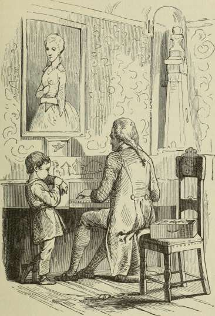
Psaline, som I synge den hver Morgen; I stod andægtige med foldede Hænder, og Fader og Moder vare lige saa højtidelige, og saa gik Døren op, og den lille Søster Maria, som ikke er to Aar endnu, og som altid danser, naar hun hører Musik
eller Sang, hvad Slags det endogsaa er, blev sat ind, — hun skulde det nu ikke, — og saa begyndte hun at danse, men kunde ikke komme i Takt, for Tonerne vare saa lange, og saa stod hun først paa det ene Ben og hældede Hovedet helt forover, og saa paa det andet Ben og hældede Hovedet helt forover, men det vilde ikke slaa til. I stod meget alvorlige, alle sammen, skønt det var nok svært, men jeg lo indvendig, og derfor faldt jeg ned af Bordet og fik en Bule, som jeg endnu gaar med, for det var ikke ret af mig at le. Men det hele gaar nu igen inden i mig, og alt hvad jeg saadan har oplevet; og det er nok de gamle Tanker, med hvad de kunne føre med. — Sig mig, om I synge endnu om Søndagen? Sig mig lidt om den lille Maria! og hvordan har min Kammerat det, den anden Tinsoldat! ja, han er rigtignok lykkelig! — jeg kan ikke holde det ud!«
»Du er foræret bort!« sagde den lille Dreng; »du maa blive; kan du ikke indse det?«
Og den gamle Mand kom med en Skuffe, hvori der var meget at se, baade »Kridthus«, og »Balsambøsse«, og gamle Kort, saa store og saa forgyldte, som man aldrig ser dem nu. Og der blev aabnet store Skuffer, og Klaveret blev aabnet, det var med Landskab indvendigt paa Laaget, og det var saa hæst, da den gamle Mand spillede paa det; og saa nynnede han en Vise.
»Ja, den kunde hun synge!« sagde han, og saa nikkede han til Portrættet, som han havde købt hos Marskandiseren, og den gamle Mands Øjne de skinnede saa klare.
»Jeg vil i Krig! jeg vil i Krig!« raabte Tinsoldaten, saa højt han kunde, og styrtede sig lige ned paa Gulvet. —
Ja, hvor blev han af? Den gamle Mand søgte, den lille Dreng søgte, borte var han, og borte blev han. »Jeg finder ham nok!« sagde den gamle, men han fandt ham aldrig; Gulvet var alt for aabent og hullet; — Tinsoldaten var falden gennem en Sprække, og der laa han i aaben Begravelse.
Og den Dag gik, og den lille Dreng kom hjem, og Ugen gik, og der gik flere Uger. Vinduerne vare ganske frosne; den
lille Dreng maatte sidde og aande paa dem for at faa et Kighul over til det gamle Hus, og der var Sneen fyget ind i alle Snirkler og Indskrifter, den laa helt op over Trappen, ligesom om der ingen var hjemme, og der var heller ingen hjemme, den gamle Mand var død.
Om Aftenen holdt en Vogn udenfor, og ned i den bar man ham i hans Kiste, han skulde ud at ligge paa Landet i sin Begravelse. Der kørte han nu, men ingen fulgte, alle hans Venner vare jo døde. Og den lille Dreng kyssede paa Fingeren efter Kisten, da den kørte.
Nogle Dage efter blev der Auktion paa det gamle Hus, og den lille Dreng saa fra sit Vindue, hvor man bar bort: de gamle Riddere og de gamle Damer, Urtepotterne med lange Ører, de gamle Stole og de gamle Skabe, noget kom her, og noget kom der; Portrættet af hende, som var funden hos Marskandiseren, kom til Marskandiseren igen, og der hang det altid, for ingen kendte hende mere, og ingen brød sig om det gamle Billede.
I Foraaret rev man Huset selv ned, for det var et Skrummel, sagde Folk. Man kunde se fra Gaden lige ind i Stuen til det Svinelæders Betræk, som blev flænget og revet; og det grønne om Altanen hang ganske vildsomt om de faldende Bjælker. — Og saa blev der ryddet op.
»Det hjalp!« sagde Nabohusene.
Og der blev bygget et dejligt Hus med store Vinduer og hvide, glatte Mure, men foran, hvor egentlig det gamle Hus havde staaet, plantedes en lille Have, og op ad Naboens Mure vokste vilde Vinranker; foran Haven kom et stort Jerngitter med Jernport, det saa stadseligt ud, Folk stod stille og kiggede derind. Og Spurvene hængte sig i Snesevis paa Vinrankerne, snakkede i Munden paa hverandre, saa godt de kunde, men det var ikke om det gamle Hus, for det kunde de
ikke huske, der var gaaet saa mange Aar, at den lille Dreng var vokset op til en hel Mand, ja, en dygtig Mand, som hans Forældre havde Fornøjelse af, og han var lige bleven gift og med sin lille Kone flyttet ind i Huset her, hvor Haven var; og han stod hos hende der, idet hun plantede en Markblomst, som hun fandt saa yndig. Hun plantede den med sin lille Haand og klappede Jorden til med Fingrene. — Av! Hvad var det? Hun stak sig. Der sad noget spidst lige op af den bløde Jord.
Det var — ja tænk! det var Tinsoldaten, ham, som var bleven borte oppe hos den gamle Mand og var rumlet og tumlet mellem Tømmer og Grus og til sidst havde ligget mange Aar i Jorden.
Og den unge Kone tørrede Soldaten, først med et grønt Blad og saa med sit fine Lommetørklæde, det havde saadan en dejlig Lugt! og det var for Tinsoldaten, ligesom om den vaagnede op af en Dvale.
»Lad mig se ham!« sagde den unge Mand, lo og rystede saa med Hovedet. »Ja, ham kan det nu ikke være, men han husker mig paa en Historie med en Tinsoldat, jeg havde, da jeg var en lille Dreng!« og saa fortalte han sin Kone om det gamle Hus, og den gamle Mand, og om Tinsoldaten, han sendte over til ham, fordi han var saa skrækkelig ene, og han fortalte det saa akkurat, som det virkelig havde været, saa at den unge Kone fik Taarer i Øjnene over det gamle Hus og den gamle Mand.
»Det kan dog være, at det er den samme Tinsoldat!« sagde hun, »jeg vil gemme den og huske paa alt hvad du har fortalt mig; men den gamle Mands Grav maa du vise mig!«
»Ja, den kender jeg ikke,« sagde han, »og ingen kender den! alle hans Venner vare døde, ingen passede den, og jeg var jo en lille Dreng!«
»Hvor han maa have været skrækkelig ene!« sagde hun.
»Skrækkelig ene!« sagde Tinsoldaten, »men dejligt er det ikke at blive glemt!«
DET GAMLE HUS.
391
»Dejligt!« raabte noget tæt ved, men ingen uden Tinsoldaten saa, at det var en Lap af det Svinelæders Betræk; den var uden al Forgyldning, den saa ud som vaad Jord, men en Mening havde den, og den sagde det:
»Forgyldning forgaar, men Svinelæder bestaar!«
Dog, det troede Tinsoldaten ikke.
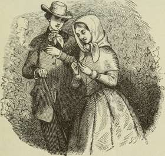
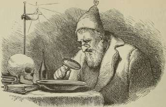
Vanddraaben.
Du kender da sagtens et Forstørrelsesglas, saadant et rundt Brilleglas, der gør alting hundrede Gange større end det er? Naar man tager og holder det for Øjet og ser paa en Vanddraabe ude fra Dammen, saa ser man over tusinde underlige Dyr, som man ellers aldrig ser i Vandet, men de ere der, og det er virkeligt. Det ser næsten ud som en hel Tallerken fuld af Rejer, der springe mellem hverandre, og de ere saa glubende, de rive Arme og Ben, Ender og Kanter af hverandre, og dog ere de glade og fornøjede paa deres Maade.
Nu var der engang en gammel Mand, som alle Folk kaldte Krible-Krable, for det hed han. Han vilde altid have det bedste ud af enhver Ting. og naar det slet ikke vilde gaa, saa tog han det med Trolddom.
Nu sidder han en Dag og holder sit Forstørrelsesglas for Øjet og ser paa en Vanddraabe, der var tagen ude fra en Pyt Vand i Grøften. Nej, hvor det kriblede og krablede der! alle de tusinde Smaadyr hoppede og sprang, trak i hverandre og aad af hverandre.
»Ja, men det er jo afskyeligt!« sagde gamle Krible-Krable, »kan man ikke faa dem til at leve i Fred og Ro,
og hver passe sit!« og han tænkte og tænkte, men det vilde ikke gaa, og saa maatte han trolde. »Jeg maa give dem Kulør, at de kunne blive tydelige!« sagde han, og saa hældte han ligesom en lille Draabe rød Vin i Vanddraaben, men det var Hekseblod, det allerfineste Slags til to Skilling; og saa bleve alle de underlige Dyr rosenrøde over hele Kroppen, det saa ud som en hel By af nøgne Vildmænd.
»Hvad har du der?« spurgte en anden gammel Trold, som ikke havde Navn, og det var just det fine ved ham.
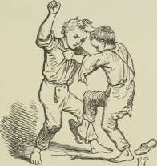
»Ja, kan du gætte, hvad det er,« sagde Krible-Krable, »saa skal jeg forære dig det; men det er ikke let at finde ud, naar man ikke veed det!«
Og Trolden, som intet Navn havde, saa igennem Forstørrelsesglasset. Det saa virkelig ud som en hel By, hvor alle Mennesker løb om uden Klæder! det var gyseligt, men endnu mere gyseligt at se, hvor den ene puffede og stødte den anden, hvor de nippedes og nappedes, bed hinanden og trak hinanden frem. Hvad der var nederst, skulde øverst, og hvad der var øverst, skulde nederst! »Se! se! hans Ben er længer end mit! baf! væk med det! Der er en, som har en lille Knop bag Øret, en lille uskyldig Knop, men den piner ham, og saa skal den pine mer!« og de hakkede i den, og de trak i ham, og de aad ham for den lille Knops Skyld. Der sad
en saa stille som en lille Jomfru og ønskede alene Fred og Rolighed, men saa skulde Jomfruen frem, og de trak i hende, og de sled i hende, og de aad hende!
»Det er overordentlig morsomt!« sagde Trolden.
»Ja, meu hvad tror du, det er?« spurgte Krible-Krable. »Kan du finde det?«
»Det er da godt at se!« sagde den anden, »det er jo Kjøbenhavn eller en anden stor By, de ligne jo alle sammen hverandre. En stor By er det!«
»Det er Grøftevand!« sagde Krible-Krable.
^Illilll llllilllllJl::!!!
Mk ^/.åiååm ^Mmm
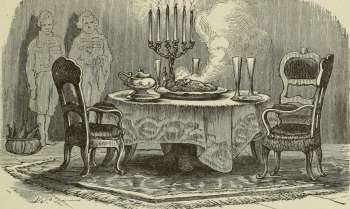
y^^gS^sg^*
Den lykkelige Familie.
Det største grønne Blad her til Lands, det er da rigtignok et Skræppeblad; holder man det foran paa sin lille Mave, saa er det ligesom et helt Forklæde, og lægger man det paa sit Hoved, saa er det i Regnvejr næsten lige saa godt som en Paraply, for det er saa forfærdelig stort. Aldrig vokser en Skræppe alene, nej, hvor der gror een, der gro flere, det er en stor Dejlighed, og al den Dejlighed er Sneglemad. De store, hvide Snegle, som fornemme Folk i gamle Dage lod lave til Frikassé, spiste og sagde: »Hum! hvor det smager!« for de troede nu, det smagte saa dejligt, de levede af Skræppeblade, og derfor bleve Skræpperne saaede.
Nu var der en gammel Herregaard, hvor man ikke længer spiste Snegle, de vare ganske uddøde, men Skræpperne vare ikke uddøde, de vokste og vokste over alle Gange og alle Bede, man kunde ikke mere faa Bugt med dem, det var en hel Skræppeskov, hist og her stod et Æble- og et Blommetræ, ellers kunde man nu aldrig have tænkt, at det var en Have; alt var Skræpper, — og derinde boede de to sidste, inderlig gamle Snegle.
De vidste ikke selv, hvor gamle de vare, men de kunde godt huske, at de havde været mange flere, at de vare af en Familie fra fremmede Lande, og at for dem og deres var hele Skoven plantet. De havde aldrig været udenfor, men de vidste, at der var endnu noget til i Verden, som hed Herregaarden, og deroppe blev man kogt, og saa blev man sort, og saa blev man lagt paa Sølvfad, men hvad videre der skete, vidste man ikke. Hvorledes det iøvrigt var at blive kogt og at ligge paa Sølvfad, kunde de ikke tænke sig, men dejligt skulde det være og særdeles fornemt. Hverken Oldenborren, Skruptudsen eller Regnormen, som de spurgte ad, kunde give Besked, ingen af dem havde været kogt eller ligget paa Sølvfad.
De gamle, hvide Snegle vare de fornemste i Verden, vidste de, Skoven var til for deres Skyld, og Herregaarden var til, for at de kunde blive kogte og lagte paa Sølvfad.
De levede nu meget ensomt og lykkeligt, og da de selv ikke havde Børn, saa havde de taget en lille, almindelig Snegl til sig, som de opdrog som deres egen, men den lille vilde ikke vokse, for han var almindelig; men de gamle, især Mutter, Sneglemutter, syntes, hun kunde dog bemærke, hvor han tog til, og hun bad Fatter, dersom han ikke kunde se det, han da vilde føle paa det lille Sneglehus, og saa følte han og fandt, at Mutter havde Ret.
En Dag var det stærk Regn.
»Hør, hvor det tromme-romme-rommer paa Skræpperne!« sagde Sneglefar.
»Der kommer ogsaa Draaber!« sagde Sneglemor. »Det løber jo lige nedad Stilken! Du skal se, her bliver vaadt! Jeg er glad ved, vi have vort gode Hus, og den lille ogsaa har sit! Der er rigtignok gjort mere for os end for alle andre Skabninger; man kan da se. at vi er Herskabet i Verden! Vi have Hus fra Fødselen, og Skræppeskoven er saaet for vor Skyld —! jeg gad vidst, hvor langt den strækker sig, og hvad der er udenfor!«
»Der er ikke noget udenfor!« sagde Sneglefar. »Bedre end hos os kan der ingen Steder være, og jeg har ikke noget at ønske!«
»Jo,« sagde Mor, »jeg gad nok komme paa Herregaarden, blive kogt og lagt paa Sølvfad, det er alle vore Forfædre blevne, og du kan tro, der er noget aparte ved det!«
»Herregaarden er muligvis falden sammen!« sagde Sneglefar, »eller Skræppeskoven er vokset hen over den, saa at Menneskene ikke kunne komme ud. Det har da heller ingen Hast, men du iler altid saa forfærdelig, og det begynder den lille ogsaa med; har han nu ikke i tre Dage krøbet op ad den Stilk, jeg faar ondt i Hovedet, naar jeg ser op paa ham!«
»Du maa ikke skænde!« sagde Sneglemor, »han kryber saa sindig, vi faa nok Fornøjelse af ham, og andet have vi gamle jo ikke at leve for! Men har du tænkt paa det: hvor faa vi en Kone til ham. Tror du ikke, der langvejs inde i Skræppeskoven skulde være nogen af vor Art?«
»Sorte Snegle tror jeg nu nok, der er,« sagde den gamle, »sorte Snegle uden Hus, men det er saa simpelt, og de have Indbildninger, men vi kunne give det i Kommission til Myrerne, de løbe frem og tilbage, som om de have noget at bestille, de veed vist en Kone til vor lille Snegl!«
»Jeg veed rigtignok den allerdejligste!« sagde Myrerne, »men jeg er bange, det gaar ikke, for hun er Dronning!«
»Det gør ikke noget!« sagde den gamle. »Har hun Hus?«
»Hun har Slot!« sagde Myrerne, »det dejligste Myreslot med syv Hundrede Gange.«
»Tak!« sagde Sneglemor, »vor Søn skal ikke i en Myretue! veed I ikke bedre, saa give vi det i Kommission til de hvide Myg, de flyve vidt omkring i Regn og i Solskin, de kende Skræppeskoven forinden og foruden.«
»Vi have en Kone for ham!« sagde Myggene, »hundrede Menneskeskridt herfra sidder paa en Stikkelsbærbusk en lille Snegl med Hus, den er ganske ensom og gammel nok til at gifte sig. Det er bare hundrede Menneskeskridt!«
»Ja, lad hende komme til ham!« sagde de gamle, »han har en Skræppeskov, hun har kun en Busk!«
Og saa hentede de den lille Sneglefrøken. Det varede otte Dage, før hun kom, men det var just det rare ved det, saa kunde man se, hun var af Arten.
DEN LYKKELIGE FAMILIE.
Og saa holdt de Bryllup. Seks Sankt-Hans-Orme lyste, saa godt de kunde; ellers gik det hele stille af, for de gamle Sneglefolk kunde ikke taale Svir og Lystighed; men en dejlig Tale blev der holdt af Sneglemor, Fatter kunde ikke, han var saa bevæget, og saa gav de dem i Arv den hele Skræppeskov og sagde, hvad de altid havde sagt. at det var det bedste i Verden, og naar de levede redelig og skikkelig og formerede sig, vilde engang de og deres Børn komme paa Herregaarden, blive kogte sorte og lagte paa Sølvfad.
Og efter at den Tale var holdt, krøb de gamle ind i deres Hus og kom aldrig mere ud; de sov. Det unge Sneglepar regerede i Skoven og fik et stort Afkom, men de bleve aldrig kogte, og de kom aldrig paa Sølvfad; saa sluttede de deraf, at Herregaarden var falden sammen, og at alle Mennesker i Verden vare uddøde, og da ingen sagde dem imod, saa var det jo sandt; og Regnen slog paa Skræppebladene for at gøre Trommemusik for deres Skyld, og Solen skinnede for at give Skræppeskoven Kulør for deres Skyld, og de vare meget lykkelige, og hele Familien var lykkelig, thi den var det.
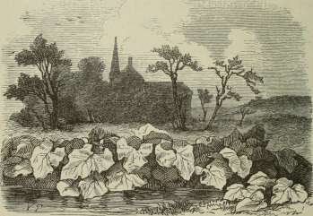
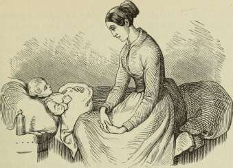
Historien om en Moder.
Der sad en Moder hos sit lille Barn, hun var saa bedrøvet, saa bange for, at det skulde dø. Det var saa blegt, de smaa Øjne havde lukket sig, det trak saa sagte Vejret, og imellem med et dybt Drag, ligesom om det sukkede; og Moderen saa endnu mere sorrigfuld paa den lille Sjæl.
Da bankede det paa Døren, og der kom en fattig, gammel Mand, svøbt ligesom i et stort Hestedækken, for det varmer, og det trængte han til, det var jo kold Vinter; alting udenfor laa med Is og Sne, og Vinden blæste, saa at det skar i Ansigtet.
Og da den gamle Mand rystede af Kulde, og det lille Barn sov et Øjeblik, gik Moderen hen og satte 01 i en lille Potte ind i Kakkelovnen, at det kunde varmes til ham; og den gamle Mand sad og vuggede, og Moderen satte sig paa Stolen tæt ved ham, saa paa sit syge Barn, der trak Vejret saa dybt, og løftede den lille Haand.
»Tror du ikke nok, at jeg beholder ham?« sagde hun, »Vor Herre vil ikke tage ham fra mig!«
Og den gamle Mand, det var Døden selv, han nikkede saa underligt, det kunde lige saa godt betyde Ja, som Nej. Og Moderen saa ned i sit Skød, og Taarerne løb hende over Kinderne; — hendes Hoved blev saa tungt, i tre Nætter og Dage havde hun ikke lukket sine Øjne, og nu sov hun, men kun et Øjeblik, saa foer hun op og rystede af Kulde: »Hvad er det!« sagde hun og saa til alle Sider; men den gamle Mand var borte, og hendes lille Barn var borte, han havde taget det med sig; og henne i Krogen snurrede og snurrede det gamle Ur, det store Blylod løb lige ned til Gulvet, bum! og saa stod ogsaa Uret stille.
Men den stakkels Moder løb ud af Huset og raabte paa sit Barn.
Derude, midt i Sneen, sad en Kone i lange, sorte Klæder, og hun sagde: »Døden har været inde i din Stue, jeg saa, han skyndte sig bort med dit lille Barn; han gaar stærkere til end Vinden, han bringer aldrig tilbage, hvad han tog!«
»Sig mig blot, hvad Vej han gik!« sagde Moderen, »sig mig Vejen, og jeg skal finde ham!«
»Jeg veed den!« sagde Konen i de sorte Klæder, »men før jeg siger den, maa du først synge for mig alle de Viser, du har sunget for dit Barn; jeg holder af dem, jeg har hørt dem før, jeg er Natten, jeg saa dine Taarer, medens du sang dem.«
»Jeg vil synge dem alle, alle!« sagde Moderen, »men stands mig ikke, at jeg kan naa ham, at jeg kan finde mit Barn!«
Men Natten sad stum og stille, da vred Moderen sine Hænder, sang og græd, og der var mange Viser, men endnu flere Taarer; og saa sagde Natten: »Gaa til højre, ind i den mørke Granskov, der saa jeg Døden tage Vej med dit lille Barn.«
Dybt inde i Skoven krydsede Vejene sig, og hun vidste ikke længer, hvor hun skulde gaa; da stod der en Tornebusk, der var hverken Blad eller Blomst paa den, det var jo ogsaa i den kolde Vintertid, og der hang Isslag paa Grenene.
»Har du ikke set Døden gaa forbi med mit lille Barn?«
»Jo!« sagde Tornebusken, »men jeg siger dig ikke, hvilken Vej han tog, uden at du først vil varme mig op ved dit Hjerte; jeg fryser ihjel, jeg bliver til bare Is.«
Og hun trykkede Tornebusken til sit Bryst, saa fast, for at den ret kunde opvarmes, og Tornene gik lige ind i hendes Kød, og hendes Blod flød i store Draaber, men Tornebusken skød friske grønne Blade, og der kom Blomster paa i den kolde Vinternat, saa varmt var der ved en bedrøvet Moders Hjerte; og Tornebusken sagde hende Vejen, som hun skulde gaa.
Da kom hun til en stor Sø, hvor der hverken var Skib eller Baad. Søen var ikke frossen nok til, at den kunde bære hende, og heller ikke aaben og lav nok til, at hun kunde vade igennem, og over den maatte hun, vilde hun finde sit Barn; saa lagde hun sig ned for at drikke Søen ud, og det var jo umuligt for et Menneske; men den bedrøvede Moder tænkte, at der dog kunde ske et Mirakel. —
»Nej, det gaar aldrig!« sagde Søen, »lad os to hellere se at blive enige! jeg holder af at samle paa Perler, og dine Øjne ere de to klareste, jeg har set; vil du græde dem ud til mig, saa skal jeg bære dig over til det store Drivhus, hvor Døden bor og passer Blomster og Træer; hver af dem er et Menneskeliv!«
»Oh, hvad giver jeg ikke for at komme til mit Barn!« sagde den forgrædte Moder, og hun græd endnu mere, og hendes Øjne sank ned paa Havsens Bund og bleve to kostbare Perler, men Søen løftede hende, som om hun sad i en Gynge, og hun fløj i en Svingning til Kysten paa den anden Side, hvor der stod et milebredt, underligt Hus; man vidste ikke, om det var et Bjerg med Skov og Huler, eller om det var tømret op, men den stakkels Moder kunde ikke se det, hun havde jo grædt sine Øjne ud.
»Hvor skal jeg finde Døden, som gik med mit lille Barn?« sagde hun.
»Her er han ikke kommen endnu!« sagde den gamle Gravkone, som gik og skulde passe paa Dødens store Drivhus. »Hvor har du kunnet finde herhen, og hvem har hjulpet dig?«
H. C. Andersen: Eventyr og Historier. 26
»Vor Herre har hjulpet mig!« sagde hun, »han er barmhjertig, og det vil du ogsaa være! hvor skal jeg finde mit lille Barn?«
»Ja, jeg kender det ikke,« sagde Konen, »og du kan ikke se! — Mange Blomster og Træer ere visnede i Nat, Døden vil snart komme og plante dem om! Du veed vel, at hvert Menneske har sit Livstræ eller sin Blomst, saaledes som nu enhver er indrettet; de se ud som andre Vækster, men de har Hjerteslag; Barnehjerte kan ogsaa banke! gaa efter det, maaske kan du kende dit Barns; men hvad giver du mig for at sige dig, hvad du mere skal gøre?«
»Jeg har ikke noget at give,« sagde den bedrøvede Moder, »men jeg vil gaa for dig til Verdens Ende.«
»Ja, der har jeg ikke noget at gøre,« sagde Konen, »men du kan give mig dit lange, sorte Haar, du veed nok selv, det er kønt, og det kan jeg lide! Du skal faa mit hvide igen, det er altid noget!«
»Forlanger du ikke andet,« sagde hun, »det giver jeg dig med Glæde!« Og hun gav hende sit smukke sorte Haar og fik den gamles snehvide igen.
Og saa gik de ind i Dødens store Drivhus, hvor Blomster og Træer vokste underligt imellem hverandre. Der stod fine Hyacinter under Glasklokker, og der stod store, bomstærke Pæoner; der vokste Vandplanter, nogle faa friske, andre halv syge, Vandsnogene lagde sig paa dem, og sorte Krebs klemte dem om Stilken. Der stod dejlige Palmetræer, Ege og Plataner, der stod Persille og blomstrende Timian; hvert Træ og hver Blomst havde sit Navn, de vare hver et Menneskeliv, Mennesket levede endnu, en i Kina, en i Grønland, rundt omkring i Verden. Der var store Træer i smaa Potter, saa at de stod saa forkuede og vare færdige ved at sprænge Potten, der var ogsaa mange Steder en lille, kedelig Blomst i fed Jord med Mos rundt om og dægget og plejet. Men den bedrøvede Moder bøjede sig over alle de mindste Planter og hørte inden i dem, hvor Menneskehjertet bankede, og imellem Millioner kendte hun sit Barns.
»Det er det!« raabte hun og strakte Haanden ud over en lille blaa Krokus, som hang ganske syg til den ene Side.
»Rør ikke ved Blomsten!« sagde den gamle Kone, »men stil dig her, og naar saa Døden kommer, jeg venter ham, før jeg veed det, lad ham da ikke rykke Planten op, og tru du med, at du vil gøre det med de andre Blomster, saa bliver han bange; han skal svare Vor Herre til dem, ingen tør rykkes op, før han giver Lov.«
Med eet susede det iskoldt igennem Rummet, og den blinde Moder kunde mærke, at det var Døden, der kom.
»Hvor har du kunnet finde Vej herhen?« spurgte han, »hvor kunde du komme hurtigere end jeg?«
»Jeg er en Moder!« sagde hun.
Og Døden strakte sin lange Haand hen imod den lille, fine Blomst, men hun holdt sine Hænder fast om den, saa tæt og dog bange for, at hun skulde røre ved et af Bladene. Da blæste Døden paa hendes Hænder, og hun følte, at det var koldere end den kolde Vind, og hendes Hænder faldt matte ned.
»Du kan dog ikke gøre noget imod mig!« sagde Døden.
»Men det kan Vor Herre!« sagde hun.
»Jeg gør kun, hvad han vil!« sagde Døden. »Jeg er hans Urtegaardsmand! jeg tager alle hans Blomster og Træer og planter dem ud i den store Paradisets Have i det ubekendte Land, men hvorledes de der gro, og hvorledes der er, tør jeg ikke sige dig!«
»Giv mig mit Barn tilbage!« sagde Moderen og græd og bad; med eet greb hun med hver Haand om to smukke Blomster tæt ved og raabte til Døden: »Jeg river alle dine Blomster af, for jeg er i Fortvivlelse!«
»Rør dem ikke!« sagde Døden. »Du siger, at du er ulykkelig, og nu vil du gøre en anden Moder lige saa ulykkelig —!«
»En anden Moder!« sagde den stakkels Kone og slap straks begge Blomsterne.
»Der har du dine Øjne!« sagde Døden, »jeg har fisket dem op af Søen, de skinnede saa stærkt; jeg vidste ikke, at det var dine; tag dem igen, de ere endnu klarere end før, se
26*
HISTORIEN OM EN MODER.
saa ned i den dybe Brønd tæt ved, jeg skal nævne Navnene paa de to Blomster, du vilde rive op, og du ser deres hele Fremtid, deres hele Menneskeliv, ser, hvad du vilde forstyrre og ødelægge.«
Og hun saa ned i Brønden; og det var en Lyksalighed at se, hvor den ene blev en Velsignelse for Verden, se, hvor megen Lykke og Glæde der udfoldede sig rundt om. Og hun
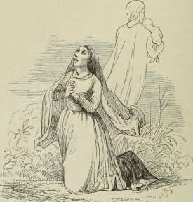
-.'y^y'/is^v. —j_ __
saa den andens Liv, og det var Sorg og Nød, Rædsel og Elendighed.
»Begge Dele er Guds Villie!« sagde Døden.
»Hvilken af dem er Ulykkens Blomst, og hvilken er Velsignelsens?« spurgte hun.
»Det siger jeg dig ikke,« sagde Døden, »men det skal du vide af mig, at den ene Blomst var dit eget Barns, det var dit Barns Skæbne, du saa, dit eget Barns Fremtid.«
Da skreg Moderen af Skræk: »Hvilket af dem var mit Barn! sig mig det! frels den uskyldige! frels mit Barn fra al den Elendighed! bær det heller bort! bær det ind i Guds
Rige! glem mine Taarer, glem mine Bønner og alt hvad jeg har sagt og gjort!«
»Jeg forstaar dig ikke!« sagde Døden. »Vil du have dit Barn tilbage, eller skal jeg gaa med det derind, hvor du ikke veed?« —
Da vred Moderen sine Hænder, faldt paa sine Knæ og bad til Vor Herre: »Hør mig ikke, hvor jeg beder imod din Villie, som er den bedste! hør mig ikke! hør mig ikke!«
Og hun bøjede sit Hoved ned i sit Skød.
Og Døden gik med hendes Barn ind i det ubekendte Land.
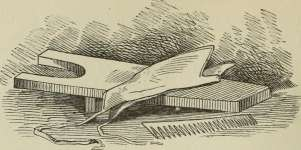
Flipperne.
Der var engang en fin Kavaler, hvis hele Bohave var en ^Støvleknægt og en Redekam, men han havde de dejligste Flipper i Verden, og det er om Flipperne, vi skulle høre en Historie. — De vare nu saa gamle, at de tænkte paa at gifte sig, og saa traf det, at de kom i Vadsk med et Strømpebaand.
»Nej!« sagde Flipperne, »nu har jeg aldrig set nogen saa slank og saa fin, saa blød og saa nysselig. Maa jeg ikke spørge om Deres Navn?«
»Det siger jeg ikke!« sagde Strømpebaandet.
»Hvor hører De hjemme?« spurgte Flipperne.
Men Strømpebaandet var saa undselig af sig og syntes, at det var noget underligt at svare paa.
»De er nok Livbaand!« sagde Flipperne, »saadan indvortes Livbaand! jeg ser nok, De er baade til Nytte og Stads, lille Jomfru!«
»De maa ikke tale til mig!« sagde Strømpebaandet, »jeg synes, jeg har slet ikke givet Anledning!«
»Jo, naar man er saa dejlig som De!« sagde Flipperne, »det er Anledning nok!«
»Lad være at komme mig saa nær!« sagde Strømpebaandet. »De ser saa mandfolkeagtig ud!«
»Jeg er ogsaa fin Kavaler!« sagde Flipperne, »jeg har Støvleknægt og Redekam!« og det var nu ikke sandt, det var jo hans Herre, der havde dem, men han pralede.
»Kom mig ikke nær!« sagde Strømpebaandet, »det er jeg ikke vant til!«
»Snerpe!« sagde Flipperne, og saa bleve de tagne af Vadsken; de fik Stivelse, hang paa Stolen i Solskin og bleve saa lagte paa Strygebræt; der kom det varme Jern.
»Frue!« sagde Flipperne, »lille Enkefrue! jeg bliver ganske varm! jeg bliver en anden en, jeg kommer rent ud af Folderne, De brænder Hul i mig! uh! — Jeg frier til Dem!«
»Las!« sagde Strygejernet og gik stolt hen over Flipperne; for det bildte sig ind, det var en Dampkedel, der skulde ud paa Jernbanen og trække Vogne.
»Las!« sagde det.
Flipperne flossede lidt i Kanterne, og saa kom Papirsaksen og skulde klippe Flosset af.
»Oh!« sagde Flipperne, »De er nok første Danserinde! hvor De kan strække Ben! det er det yndigste, jeg har set! det kan intet Menneske gøre Dem efter!«
»Det veed jeg!« sagde Saksen.
»De fortjente at være Grevinde!« sagde Flipperne, »alt hvad jeg har, er en fin Kavaler, en Støvleknægt og en Redekam —! bare jeg havde Grevskab!«
»Frier Han!« sagde Saksen, for den blev vred, og saa gav den ham et ordentligt Klip, og saa var han kasseret.
»Jeg maa nok fri til Redekammen!« sagde Flipperne. »Det er mærkeligt, hvor De beholder alle Deres Tænder, lille Frøken! Har De aldrig tænkt paa Forlovelse?«
»Jo, det kan De nok vide!« sagde Redekammen, »jeg er jo forlovet med Støvleknægten!«
»Forlovet!« sagde Flipperne; nu var der ingen flere at fri til, og saa foragtede han det.
En lang Tid gik, saa kom Flipperne i Kasse hos Papirmølleren ; der var stort Kludeselskab, de fine for sig, de grove for sig, saaledes som det skal være. De havde alle meget at fortælle, men Flipperne mest, det var en ordentlig Pralhans.
»Jeg har haft saa frygtelig mange Kærester!« sagde Flipperne, »jeg kunde ikke gaa i Ro! jeg var nu ogsaa fin Kavaler, med Stivelse! jeg havde baade Støvleknægt og Rede-
FLIPPERNE.
kam, som jeg aldrig brugte! — De skulde have set mig den Gang, set mig, naar jeg laa paa Siden! Aldrig glemmer jeg min første Kæreste, hun var Livbaand, saa fin, saa blød og saa nydelig, hun styrtede sig i en Vandballe for min Skyld! — Der var ogsaa en Enkefrue, som blev gloende, men jeg lod hende staa og blive sort! Der var den første Danserinde, hun gav mig den Flænge, jeg nu gaar med, hun var saa glubsk! min egen Redekam var forlibt i mig, hun tabte alle sine Tænder af Kærestesorg. Ja, jeg har oplevet meget af det Slags! men det gør mig mest ondt for Strømpebaandet — jeg mener Livbaandet, der gik i Vandballen. Jeg har meget paa min Samvittighed, jeg kan trænge til at blive til hvidt Papir!« Og det bleve de, alle Kludene bleve hvidt Papir, men Flipperne bleve netop til det Stykke hvide Papir, vi her se, hvorpaa Historien er trykt, og det var, fordi at de pralede saa frygteligt bag efter, af hvad de aldrig havde været; og det skal vi tænke paa, at vi ikke bære os lige saadan ad, for vi kunne saamænd aldrig vide, om vi ikke ogsaa engang komme i Kludekassen og blive gjorte til hvidt Papir og faar vor hele Historie trykt for paa, selv den allerhemmeligste, og maa saa selv: løbe om og fortælle den, ligesom Flipperne.
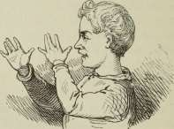
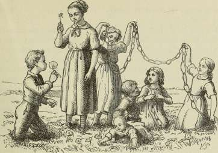
Der er Forskel.
Det var i Maj Maaned, Vinden blæste endnu koldt; men Foraaret var der, sagde Buske og Træer, Mark og Enge; det mylrede med Blomster og det lige op i det levende Gærde, og der just talte Foraaret selv sin Sag, det talte fra et lille Æbletræ, der var en eneste Gren, saa frisk, saa blomstrende, overdænget med de fine, rosenrøde Knopper, som vare lige ved at aabne sig; den vidste nok selv, hvor køn den var, for det ligger i Bladet, som i Blodet, og derfor blev den heller ikke overrasket ved, at Herskabsvognen holdt paa Vejen foran den, og den unge Grevinde sagde, at den Æblegren var det yndigste, man kunde se, den var Foraaret selv i sin dejligste Aaben-barelse. Og Grenen blev brækket af, og hun holdt den i sin fine Haand og skyggede over den med sin Silkeparasol, — og saa kørte de til Slottet, hvor der var høje Sale og pyntelige Stuer; klare, hvide Gardiner flagrede ved de aabne Vinduer, og dejlige Blomster stod i skinnende, gennemsigtige Vaser, og i en af disse, den var som skaaren ud af nysfalden Sne, blev
Æblegrenen sat mellem friske, lyse Bøgegrene; det var en Lyst at se den.
Og saa blev Grenen stolt, og det var jo ganske menneskeligt.
Der kom mange Slags Folk gennem Stuerne, og eftersom de gjaldt for, turde de sige deres Beundring, og somme sagde slet ingenting, og somme sagde alt for meget, og Æblegrenen forstod, at der var Forskel mellem Menneskene, ligesom mellem Væksterne. »Somme ere til Stads, og somme ere til Næring, der er ogsaa de, som kunne ganske undværes,« mente Æblegrenen, og da den just var sat ved det aabne Vindue, hvorfra den kunde se baade ned i Haven og ud paa Marken, saa havde den Blomster og Vækster nok til at betragte og tænke over; der stod rige og fattige, nogle alt for fattige.
»Stakkels forkastede Urter!« sagde Æblegrenen, »der er rigtignok gjort Forskel, og hvor de maa føle sig ulykkelige, dersom det Slags kan føle som jeg og mine lige kunne det; der er rigtignok gjort Forskel, men det maa der gøres, ellers stod jo alle ens!«
Og Æblegrenen saa med et Slags Medlidenhed især paa eet Slags Blomster, som der var i Mængde af paa Marker og Grøfter; ingen bandt dem i Buket, de vare alt for almindelige, ja man kunde finde dem selv imellem Brostenene, de skød op som det argeste Ukrudt, og saa havde de det fæle Navn Fandens Mælkebøtter.*)
»Stakkels foragtede Vækst!« sagde Æblegrenen, »du kan ikke gøre ved, at du blev hvad du blev, at du er saa almindelig, og at du fik det hæslige Navn, du har! men det er med Væksterne som med Menneskene, der maa være Forskel!«
»Forskel!« sagde Solstraalen og kyssede den blomstrende Æblegren, men kyssede ogsaa de gule Fandens Mælkebøtter ude paa Marken, alle Solstraalens Brødre kyssede dem, de fattige Blomster, som de rige.
Æblegrenen havde aldrig tænkt over Vor Herres uendelige Kærlighed mod alt, hvad der lever og røres i ham, den havde aldrig tænkt over, hvor meget smukt og godt der kan
*) Leontodon.
ligge gemt, men ikke glemt, — men det var jo ogsaa ganske menneskeligt.
Solstraalen, Lysets Straale vidste det bedre: »Du ser ikke langt, du ser ikke klart! — Hvor er den forkastede Urt, den, du især beklager?«
»Fandens Mælkebøtter!« sagde Æblegrenen. »Aldrig bindes de i Buket, de trædes med Foden, der er for mange af dem, og naar de løbe i Frø, flyver det i smaatskaaren Uld hen over Vejen og hænger Folk i Klæderne. Ukrudt er det! men det skal der jo ogsaa være! — jeg er virkelig meget taknemmelig, at jeg ikke er bleven en af dem.«
Og hen over Marken kom en hel Skare Børn; det mindste af disse var nu saa lillebitte, at det blev baaret af de andre, og da det blev sat i Græsset mellem de gule Blomster, lo det højt af Glæde, sparkede med de smaa Ben, væltede sig omkring, plukkede kun de gule Blomster og kyssede dem i sød Uskyldighed. De noget større Børn brød Blomsten fra den hule Stilk, bøjede denne rundt ind i sig selv, Led ved Led, en hel Kæde blev det; først en til Halsen, saa en at hænge om Skulderen og om Livet, paa Brystet og paa Hovedet; det var en hel Pragt af grønne Lænker og Kæder; men de største Børn tog forsigtig den afblomstrede Urt, Stilken, der bar dens fnugartede, sammensatte Frøkrone, denne løse, luftige Uldblomst, der er et helt lille Kunststykke som af de fineste Fjer, Fnug eller Dun; de holdt den ved Munden for i eet Pust at afblæse den helt; den, der kunde det, fik ny Klæder, før Aaret var omme, havde Bedstemoder sagt.
Den foragtede Blomst var en hel Profet ved denne Lejlighed.
»Ser du?« sagde Solstraalen, »ser du dens Skønhed, ser du dens Magt?«
»Ja, for Børn!« sagde Æblegrenen.
Og der kom ude paa Marken en gammel Kone og gravede med sin stumpe, skaftløse Kniv ned om Blomstens Rod og trak den op; nogle af Rødderne vilde hun koge sig Katie paa, andre vilde hun faa Penge for, idet hun bragte Apotekeren dem til Lægedom.
»DER ER FORSKEL.«
»Skønhed er dog noget højere!« sagde Æblegrenen. »Kun de udvalgte komme i det skønnes Rige! der er Forskel mellem Væksterne, ligesom der er Forskel mellem Menneskene.«
Og Solstraalen talte om den uendelige Kærlighed hos Gud gennem alt det skabte og for alt, hvad der har Liv, og om den lige Fordeling af alt i Tid og Evighed.
»Ja, det er nu Deres Mening!« sagde Æblegrenen.
Og der kom Folk i Stuen, og den unge Grevinde kom, hun, som havde stillet Æblegrenen saa smukt i den gennem-
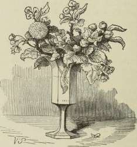
sigtige Vase, hvor Sollyset straalede; og hun bragte en Blomst eller hvad det nu var, det skjultes af tre, fire store Blade, der ligesom et Kræmmerhus blev holdt rundt om det, for at ingen Træk eller Vindpust skulde komme til at gøre det Skade, og saa forsigtigt blev det baaret, som aldrig den fine Æblegren var bleven det. Ganske lempeligt kom nu de store Blade bort, og man saa den fine, fnuggede Frøkrone af den gule, foragtede Fandens Mælkebøtte. Den var det, hun saa forsigtig havde plukket, saa omhyggeligt bar, for at ikke een af de fine Fjerpile, der danne dens Taageskikkelse og sidde saa løse, skulde blæse af. Hel og herlig havde hun den; og
hun beundrede dens skønne Form, dens luftige Klarhed, dens hele særegne Sammensætning, dens Skønhed, idet den skulde vejres hen for Vinden.
»Se dog, hvor forunderlig dejlig Vor Herre har skabt den!« sagde hun. »Jeg vil male den med Æblegrenen; den er nu saa uendelig dejlig for alle, men ogsaa denne fattige Blomst har af Vor Herre lige saa meget paa en anden Maade; saa forskellige ere de og dog begge Børn i Skønhedens Rige.«
Og Solstraalen kyssede den fattige Blomst, og den kyssede den blomstrende Æblegren, dens Blade syntes at rødme derved.
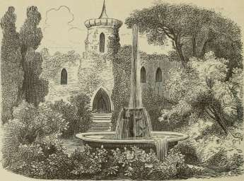
Verdens dejligste Rose.
Der var en mægtig Dronning, i hvis Have fandtes de dejligste Blomster for enhver af Aarets Tider og fra alle Verdens Lande, men især var det Roserne, som hun elskede, og derfor havde hun af disse de mest forskellige Arter, lige fra den vilde Hæk med de æbleduftende, grønne Blade til Provences skønneste Rose, og de vokste op ad Slottets Mure, slyngede sig om Søjlerne og Vindueskarmene, ind i Gangene og hen ad Loftet i alle Sale; og Roserne vekslede i Duft, Form og Farve.
Men Sorg og Bedrøvelse boede herinde; Dronningen laa paa sin Sotteseng, og Lægerne forkyndte, at hun maatte dø.
»Der er dog en Frelse for hende!« sagde den viseste iblandt dem. »Bring hende Verdens dejligste Rose, den, der er Udtrykket af den højeste og reneste Kærlighed; kommer den for hendes Øjne, før de briste, da dør hun ikke.«
Og unge og gamle kom rundt om fra med Roser, de dejligste, der blomstrede i hver Have, men de Roser var det ikke; fra Kærlighedens Urtegaard maatte Blomsten hentes; men hvilken Rose der var Udtrykket af den højeste, den reneste Kærlighed?
Og Skjaldene sang om Verdens dejligste Rose; hver nævnede sin. Og der gik Bud vidt om Land til hvert Hjerte, der slog i Kærlighed, der gik Bud til hver Stand og hver Alder.
»Ingen har endnu nævnet Blomsten!« sagde den vise. »Ingen har peget hen paa det Sted, hvor den fremsprang i sin Herlighed. Ikke er det Roserne fra Romeo og Julies Kiste eller fra Valborgs Grav, skønt de Roser ville altid dufte gennem Sagn og Sange, det er ej Roserne, som skyde frem fra Winkel-rieds blodige Lanser, fra Blodet, der helligt vælder ud fra Heltens Bryst i Døden for Fædrelandet, skønt ingen Død er mere sød, ingen Rose rødere end dette Blod, der da flyder. Ej heller er det hin Underblomst, for hvis Pleje Manden i Aar og Dag, i lange søvnløse Nætter i den ensomme Stue, hengiver sit friske Liv, Videnskabens magiske Rose.«
»Jeg veed, hvor den blomstrer,« sagde en lyksalig Moder, der med sit spæde Barn kom til Dronningens Leje. »Jeg veed, hvor Verdens dejligste Rose findes! Den Rose, der er Udtrykket af den højeste og reneste Kærlighed. Den blomstrer paa de blussende Kinder af mit søde Barn, naar det styrket af Søvnen slaar Øjnene op og ler imod mig med hele sin Kærlighed.«
»Dejlig er den Rose, men en dejligere findes der!« sagde den vise.
»Ja, langt skønnere!« sagde en af Kvinderne. »Jeg har set den; en mere ophøjet hellig Rose blomstrer der ikke, men den var bleg, som Terosens Blade; paa Dronningens Kinder saa jeg den; hun havde lagt sin kongelige Krone og gik selv i den lange, sorgfyldte Nat med sit syge Barn, græd over det, kyssede det og bad til Gud en Bøn for det, som en Moder beder i Angestens Time.
»Hellig og vidunderlig i sin Magt er Sorgens hvide Rose, men dog er det ikke den.«
»Nej, Verdens dejligste Rose saa jeg foran Herrens Alter!« sagde den fromme, gamle Biskop. »Jeg saa den lyse, som en Engels Aasyn viste sig. De unge Piger gik til Nadverens Bord, fornyede deres Daabs Pagt, og der blussede Roser, og der blegnede Roser paa de friske Kinder; en ung Pige stod der; hun
VEKDENS DEJLIGSTE ROSE.
saa med hele Sjælens fulde Renhed og Kærlighed op mod sin Gud; det var Udtrykket af den reneste og den højeste Kærlighed.«
»Velsignet være den!« sagde den vise, »dog ingen af eder har endnu nævnet Verdens dejligste Rose.«
Da traadte ind i Stuen et Barn, Dronningens lille Søn; Taarerne stod. i hans Øjne og paa hans Kinder; han bar en stor, opslagen Bog, dens Bind var af Fløjl og med store Sølvhægter.
»Moder!« sagde den lille, »oh, hør dog, hvad jeg har læst!« og Barnet satte sig ved Sengen og læste af Bogen om ham, der hengav sig selv til Korsets Død for at frelse Menneskene, selv de ufødte Slægter. »»Større Kærlighed gives der ikke!««
Og der gik et Rosenskær over Dronningens Kinder, hendes Øjne bleve saa store, saa klare, thi hun saa fra Bogens Blade løfte sig Verdens dejligste Rose, Billedet af den, som fremsprang fra Kristi Blod paa Korsets Træ.
»Jeg ser den!« sagde hun. »Aldrig dør den, som ser den Rose, den dejligste paa Jorden!«
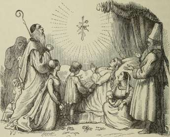
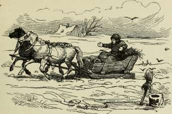
Aarets Historie.
Det var sidst i Januar; en frygtelig Snestorm var det; Sneen fløj i fygende Hvirvel gennem Gader og Stræder; Ruderne udenpaa vare som overklistrede med Sne, fra Tagene styrtede den i Dynger, og saa var der en Flugt i Folk, de løb, de fløj og foer hinanden i Armene, holdt hinanden fast et Øjeblik og havde saa længe Fodfæste. Kareter og Heste vare ligesom overpudrede, Tjenerne stod med Ryggen mod Kareten og kørte baglængs imod Vinden, Fodgængeren holdt sig stadig i Læ af Vognen, der kun langsomt gled af Sted i den dybe Sne; og da endelig Stormen lagde sig, og der blev kastet en smal Sti langs Husene, saa stod dog Folk stille der, naar de mødtes; ingen af dem havde Lyst til at gøre det første Skridt med at træde op i den dybe Sne, for at den anden kunde slippe forbi. Tavse stod de, til endelig, efter ligesom en stille Overenskomst, hver af dem gav eet Ben til Pris og lod dette gaa ind i Snedyngen.
Mod Aften var det blikstille, Himlen saa ud, som om
den var fejet og gjort mere høj og gennemsigtig, Stjernerne syntes splinterny, og nogle vare saa blaa og klare, — og det frøs, saa det knagede efter, — sagtens kunde da det øverste Snelag blive saa stærkt, at det i Morgenstunden bar Graa-spurvene; de hoppede om snart oppe, snart nede, hvor der var skovlet, men megen Æde var der ikke at finde, og de frøs ordentlig.
»Pip!« sagde den ene til den anden, »det kalder man det ny Aar! — det er jo værre end det gamle! saa kunde vi lige saa godt have beholdt det. Jeg er misfornøjet, og det har jeg Grund til.«
»Ja, der løb nu Menneskene om og skød Nytaar ind,« sagde en lille, forfrossen Spurv, »de slog Potter paa Døre og vare rent ellevilde af Glæde over, at nu gik det gamle Aar væk; og det var jeg ogsaa glad over, for jeg ventede, at vi da vilde faa varme Dage, men det er der ikke blevet noget af; det fryser meget strengere end før! Menneskene have taget fejl af Tidsregningen.«
»Det har de!« sagde en tredie, der var gammel og hvid i Toppen; »de have nu noget, som de kalde Almanakken, den er saadan deres egen Opfindelse, og saa skal alt gaa efter den! men det gør det ikke. Naar Foraaret kommer, saa begynder Aaret, det er Naturens Gang, og den regner jeg efter.«
»Men naar kommer Foraaret?« spurgte de andre.
»Det kommer, naar Storken kommer, men det er meget ubestemt med ham, og herinde i Byen er der ingen, der veed noget derom, det veed de bedre ude paa Landet; skal vi flyve derud og vente? Der er man da Foraaret nærmere.«
»Ja, det kan være meget godt!« sagde en af dem, der længe havde gaaet og pippet uden egentlig at sige noget. »Jeg har herinde i Byen nogle Bekvemmeligheder, som jeg er bange, at jeg vil komme til at savne derude. Her omme i en Gaard er der en Menneskefamilie, der meget fornuftigt har fundet paa at slaa fast i Væggen tre, fire Urtepotter med den store Aabning ind og Bunden udad, i den er der skaaret et Hul saa stort, at jeg kan flyve ud og ind; der
har jeg og min Mand Rede, og derfra ere alle vore Unger fløjne ud. Menneskefamilien har naturligvis indrettet det hele for at have den Fornøjelse at se paa os, ellers havde de nok ikke gjort det. De strø Brødkrummer ud, ogsaa for deres Fornøjelse, og vi have da Føden; der er ligesom sørget for en; — og saa tror jeg, at jeg bliver, og min Mand bliver, skønt vi ere meget misfornøjede, — men vi blive.«
»Og vi flyve ud paa Landet for at se, om ikke Foraaret kommer!« og saa fløj de.
Og der var ordentlig Vinter ude paa Landet; det frøs der et Par Grader stærkere end inde i Byen. Den skarpe Vind blæste hen over de snelagte Marker. Bonden, med store Bælgvanter paa, sad i sin Slæde og slog sig med sine Arme for at faa Kulden af dem; Pisken laa paa Skødet, de magre Heste løb, saa de dampede, Sneen knagede, og Spurvene hoppede i Hjulsporene og frøs. »Pip! naar kommer Vaaren? Det varer saa længe!«
»Saa længe!« klang det hen over Markerne fra den højeste Banke, belagt med Sne; og det kunde være Ekko, man hørte, men det kunde ogsaa være Tale af den underlige, gamle Mand, som sad der øverst paa Snedriven i Vind og Vejr; han var ganske hvid, ligesom en Bonde i hvid Vadmelskofte, med langt, hvidt Haar, hvidt Skæg, ganske bleg og med store, klare Øjne.
»Hvem er den gamle der henne?« spurgte Spurvene.
»Det veed jeg!« sagde en gammel Ravn, der sad paa Ledpælen og var nedladende nok til at erkende, at vi alle ere Smaafugle for Vor Herre, og derfor ogsaa indlod sig med Spurvene og gav Forklaring. »Jeg veed, hvem den gamle er. Det er Vinteren, den gamle Mand fra det forrige Aar, han er ikke død, som Almanakken siger, nej, han er saamænd Formynder for den lille Prins Foraar, der kommer. Jo, Vinteren fører Regimentet. Hu! det knager nok i jer, I smaa!«
»Ja, er det ikke det, jeg siger!« sagde den mindste, »den Almanak er bare Menneskepaafund, den er ikke lempet efter Naturen! det skulde de lade os om, vi, som ere finere skabte.«
27*
Og der gik een Uge, der gik næsten to; Skoven var sort, den frosne Indsø laa saa tung og saa ud som størknet Bly; Skyerne, ja, det var ikke Skyer, det var vaade, iskolde Taa-ger, hang hen over Landet; de store, sorte Krager fløj i Flokke, uden Skrig, det var, som om alt sov. — Der gled en Solstraale hen over Søen, og den skinnede som smeltet Tin. Snelaget hen over Marken og oppe paa Banken glimrede ikke som før, men den hvide Skikkelse, Vinteren selv, sad der endnu med Blikket stadigt mod Syden; han mærkede slet ikke, at Snetæppet ligesom sank ind i Jorden, at hist og her en lille græsgrøn Plet kom frem, og der mylrede det da med Spurve.
»Kvivit! Kvivit! kommer nu Vaaren?«
»Vaaren!« klang det hen over Mark og Eng og igennem de sortbrune Skove, hvor Mosset skinnede friskt grønt paa Træstammerne; og gennem Luften kom flyvende, Syd fra, de to første Storke: paa Ryggen af hver sad der et lille dejligt Barn, en Dreng og en Pige; og de kyssede Jorden til Hilsen; og hvor de satte deres Fødder, vokste hvide Blomster frem under Sneen; Haand i Haand gik de op til den gamle Ismand, Vinteren, lagde sig ved hans Bryst til ny Hilsen, og i samme Stund vare de alle tre skjulte, og hele Landskabet skjult; en tyk, vaad Taage, saa tæt og tung, indhyllede alt. — Lidt efter luftede det, — Vinden foer af Sted, den kom med stærke Kast og jog Taagen bort, Solen skinnede saa varmt; — Vinteren selv var forsvunden, Foraarets dejlige Børn sad paa Aarets Trone.
»Det kalder jeg Nytaar!« sagde Spurvene. »Nu faa vi vel igen vore Rettigheder og Erstatning for den strenge Vinter.«
Hvorhen de to Børn vendte sig, der skød grønne Knopper frem paa Buske og Træer, der blev Græsset højere, Sædemarken mere og mere liflig grøn. Og rundt om kastede den lille Pige Blomster; hun havde af dem i Overflødighed i sit Skørt, de syntes der at mylre frem, altid var det fuldt, hvor ivrig hun end var med at kaste, — i sin Ilfærdighed rystede hun en hel Blomstersne hen over Æble- og Ferskentræer,
AARETS HISTORIE.
421
saa at de stod i fuld Pragt, før de endnu rigtig havde grønne Blade.
Og hun klappede i Hænderne, og Drengen klappede, og
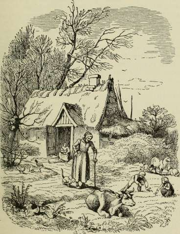
da kom der Fugle frem, man vidste ikke hvorfra, og alle kvidrede og sang: »Vaaren er kommen!«
Det var dejligt at se. Og mangen gammel Morlille kom uden for sin Dør i Solskinnet, skuttede sig, saa hen paa de
gule Blomster, der prangede over hele Engen, akkurat ligesom i hendes unge Dage; Verden blev ung igen. »Det er velsignet i Dag herude!« sagde hun.
Og Skoven var endnu brungrøn, Knop ved Knop, men Skovmærken var fremme, saa frisk og saa duftende, Violerne stod i en Fylde, og der var Anemoner, Kodriver og Oksedriver, ja, i hvert Græsstraa var Saft og Kraft, det var rigtignok et Pragttæppe at sidde paa, og der sad Foraarets unge Par og holdt hinanden i Hænderne og sang og smilede og vokste mer og mer.
En mild Regn faldt fra Himlen over dem, de mærkede det ikke, Regndraaben og Glædestaaren blev en og samme Draabe. Brud og Brudgom kyssede hinanden, og i det Nu sprang Skoven ud. — Da Solen stod op, vare alle Skove grønne.
Og Haand i Haand gik Brudeparret under det friske, hængende Løvtag, hvor kun Sollysets Straaler og Slagskyggerne gav Farveveksel i det grønne. En jomfruelig Renhed og en forfriskende Duft var i de fine Blade; klar og levende rislede Aa og Bæk mellem de fløjlsgrønne Siv og over de brogede Stene. »Fuldt op evigt og altid er det, og bliver det!« sagde hele Naturen. Og Kukkeren sang, og Lærken slog, det var det dejlige Foraar; dog Piletræerne havde Uldvanter om sine Blomster, de vare nu saa gruelig forsigtige, og det er kedeligt.
Og saa gik Dage, og saa gik Uger, Varmen ligesom væltede ned; hede Luftbølger gik gennem Kornet, der mere og mere gulnede. Nordens hvide Lotus paa Skovsøerne spredte sine store grønne Blade ud over Vandspejlet, og Fiskene søgte Skygge under dem; og paa Skovens Læside, hvor Solen brændte paa Bondehusets Væg og ordentlig gennemvarmede de udsprungne Roser, og Kirsebærtræerne hang fulde med saftige, sorte, næsten solhede Bær, sang Sommerens dejlige Kvinde, hende vi saa som Barn og som Brud; og hun saa mod de stigende mørke Skyer, der i Bølgeformer, som Bjerge, sortblaa og tunge, løftede sig højere og højere; fra tre Sider kom de; mer og mer, som et forstenet, omvendt Hav, sæn-
kede de sig mod Skoven, hvor alt, som ved en Trolddom, var tavst; hver Luftning havde lagt sig, hver Fugl tav, der var en Alvor, en Forventning i hele Naturen; men paa Veje og Stier skyndte sig af Sted kørende, ridende og gaaende, for at komme under Tag. — Da lyste det med eet, som om Solen brød frem, blinkende, blendende, alt opbrændende, og der blev Mulm igen i et rullende Brag; Vandet styrtede i Strømme ned; det blev Nat, og det blev Lys, det blev Stilhed, og det blev Bulder. De unge, brunfjerede Rør i Mosen bevægede sig i lange Bølger, Skovens Grene skjultes i Vand-taager, Mørket kom, og Lyset kom, Stilhed og Bulder. — Græs og Korn laa som slaaet ned, som skyllet hen, som skulde det aldrig rejse sig. — Pludselig blev Regnen til enkelte Draaber, Solen skinnede, og fra Straa og fra Blad blinkede Vanddraaberne som Perler, Fuglene sang, Fiskene slog op fra Aavandet, Myggene dansede, og ude paa Stenen i det salte, piskede Havvand sad Sommeren selv, den kraftige Mand med de fyldige Lemmer, med drivvaadt Haar, — forynget af det friske Bad sad han i det varme Solskin. Al Naturen var forynget rundt om, alt stod frodigt, kraftigt og skønt; det var Sommer, den varme, dejlige Sommer.
Og liflig og sød var den Duft, der kom fra den frodige Kløvermark, Bierne summede der om det gamle Tingsted; Brombærranken snoede sig op om Alterstenen, der, vasket af Regnen, skinnede i Sollyset; og derhen fløj Bidronningen med sin Sværm og satte Voks og Honning. Ingen saa det uden Sommeren og hans kraftige Viv; for dem stod Alterbordet dækket med Naturens Offergave.
Og Aftenhimlen straalede som et Guld, ingen Kirkekuppel har det saa rigt, og Maanen skinnede mellem Aftenrøde og Morgenrøde. Det var Sommertid.
Og der gik Dage, og der gik Uger. — Høstfolkenes blanke Leer blinkede i Kornmarkerne, Æbletræets Grene bøjede sig med røde og gule Frugter; Humlen duftede dejligt og hang i store Knopper, og under Hasselbuskene, hvor Nødderne sad i svære Kløvser, hvilte Mand og Viv, Sommeren med sin alvorsfulde Kvinde.
»Hvilken Rigdom!« sagde hun, »rundt om Velsignelse, hjemligt og godt, og dog, jeg veed ikke selv, jeg længes efter — Hvile, — Ro! jeg veed ikke Ordet derfor! — Nu pløje de alt igen paa Marken! Mere og altid mere ville Menneskene vinde! — Se, Storkene komme i Flokke og gaa i Afstand efter Ploven; Ægyptens Fugl, som bar os gennem Luften! Husker du, da vi begge som Børn kom herind i Nordens Lande? — Blomster bragte vi, dejligt Solskin og grønne Skove, dem har nu Vinden faret ilde med, de brunes og mørknes som Sydens Træer, men bære ikke, som de, gyldne Frugter!«
»Dem vil du se!« sagde Sommeren, »saa glæd dig da!« og han løftede sin Arm, og Skovens Blade farvedes med rødt og med Guld, der kom en Farvepragt over alle Skove; Rosenhækken skinnede med ildrøde Hyben, Hyldegrenene hang med store, tunge, sortbrune Bær, de vilde Kastanier faldt modne ud af de sortgrønne Skaller, og inde i Skoven blomstrede Violerne anden Gang.
Men Aarets Dronning blev mere og mere stille, mere bleg. »Det lufter koldt!« sagde hun, »Natten har vaade Taager! — jeg længes efter — Barndomslandet.« —
Og hun saa Storkene flyve bort, hver en! og hun strakte Hænderne efter dem. — Hun saa op til Rederne, der stod tomme, og der vokste op i en den langstilkede Kornblomst og i en anden den gule Kiddike, som om Reden kun var til som Værn og Gærde om den; og Spurvene kom derop.
»Pip! hvor er Herskabet blevet af? de kan nok ikke taale, at det blæser paa dem, og saa ere de tagne ud af Landet; Lykke paa Rejsen!«
Og mere og mere gul bleve Skovens Blade, og Løv faldt paa Løv, Efteraarets Storme suste, det var sent paa Høstens Tid. Og paa det gule Løvfald laa Aarets Dronning og saa med milde Øjne mod den blinkende Stjerne, og hendes Husbond stod hos hende. Et Vindstød hvirvlede i Løvet — det faldt igen, da var hun borte, men en Sommerfugl, Aarets sidste, fløj gennem den kolde Luft.
Og de vaade Taager kom, den isnende Blæst og de
AARETS HISTORIE.
425
mørke, længste Nætter. Aarets Drot stod med snehvidt Haar, men han vidste det ikke selv, han troede, at det var Snefnuggene, som faldt fra Skyen; et tyndt Snelag laa hen over den grønne Mark.
Og Kirkeklokkerne ringede til Juletid.
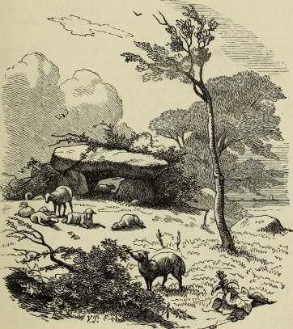
»Fødselsklokkerne ringe!« sagde Aarets Drot, »snart fødes det ny Herskerpar, og jeg faar Hvile som hun, Hvile i den blinkende Stjerne.«
Og i den friske, grønne Granskov, hvor Sneen laa, stod Juleengelen og indviede de unge Træer, der skulde til dens Fest.
»Glæde i Stuen og under de grønne Grene!« sagde Aarets gamle Drot, Uger havde ældet ham til snehvid Gubbe; »det stunder for mig til Hvile, Aarets unge Par faar nu Krone og Scepter!«
»Og Magten er dog din!« sagde Juleengelen, »Magten og ikke Hvilen! Lad Sneen ligge varmende hen over den unge Sæd! lær at bære det, at en anden hyldes, og du dog er Hersker, lær at være glemt og dog at leve! din Friheds Time kommer, naar Vaaren kommer!«
»Naar kommer Vaaren?« spurgte Vinteren.
»Den kommer, naar Storken kommer!«
Og med hvide Lokker og snehvidt Skæg sad Vinteren iskold, gammel og bøjet, men stærk som Vinterstormen og Isens Magt, højt paa Bankens Snedrive, og saa mod Syd, som Vinteren forud havde siddet og set. — Isen knagede, Sneen knirkede, Skøjteløberne svang sig paa de blanke Søer, og Ravne og Krager tog sig godt ud paa den hvide Grund, ingen Vind rørte sig. Og i den stille Luft knyttede Vinteren Hænderne, og Isen blev Favne tyk mellem Landene.
Saa kom igen Spurvene fra Byen og spurgte: »Hvem er den gamle Mand derhenne?« Og Ravnen sad der igen, eller en Søn af ham, som er lige det samme, og den sagde dem: »Det er Vinteren! den gamle Mand fra det forrige Aar. Han er ikke død, som Almanakken siger, men Formynder for Vaaren, som kommer!«
»Naar kommer Vaaren?« sagde Spurvene, »saa faa vi god Tid, og bedre Regimente! det gamle duede ikke.«
Og i stille Tanker nikkede Vinteren til den bladløse, sorte Skov, hvor hvert Træ viste Grenenes dejlige Form og Bøjning; og under Vinterblundet sænkede sig Skyernes iskolde Taager, — Herskeren drømte om sin Ungdoms og sin Manddoms Tid, og ved Dagningen stod hele Skoven dejlig med Rimfrost, det var Vinterens Sommerdrøm; Solskinnet dryssede Rimfrost fra Grenene.
»Naar kommer Vaaren?« spurgte Spurvene.
»Vaaren!« lød det som Ekko fra de Banker, hvor Sneen
AAKETS HISTORIE.
427
laa. Og Solen skinnede mere og mere varm, Sneen smeltede, Fuglene kvidrede: »Vaaren kommer!«
Og højt gennem Luften kom den første Stork, den anden fulgte; et dejligt Barn sad paa Ryggen af hver, og de dalede ned paa den aabne Mark, og de kyssede Jorden, og de kyssede den gamle, stille Mand, og som Moses paa Bjerget svandt han, baaren af Skytaagen.
Aarets Historie var endt.
»Det er meget rigtigt!« sagde Spurvene, »og det er ogsaa meget kønt, men det er ikke efter Almanakken, og saa er det galt.«
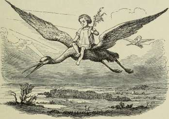
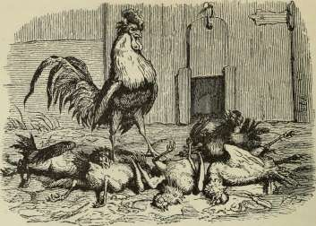
Det er ganske vist!
Det er en frygtelig Historie!« sagde en Høne, og det omme i den Kant af Byen, hvor Historien ikke var passeret. »Det er en frygtelig Historie i Hønsehuset! jeg tør ikke sove alene i Nat! det er godt, at vi ere mange sammen paa Hjalet!« — Og saa fortalte hun, saa at Fjerene rejste sig paa de andre Høns, og Hanen lod Kammen falde. Det er ganske vist!
Men vi ville begynde med Begyndelsen, og den var i den anden Kant af Byen i et Hønsehus. Solen gik ned, og Hønsene fløj op; en af dem, hun var hvidfjeret og lavbenet, lagde sine reglementerede Æg og var, som Høne, respektabel i alle Maader; idet hun kom til Hjals, pillede hun sig med Næbbet, og saa faldt der en lille Fjer af hende.
»Der gik den!« sagde hun, »jo mere jeg piller mig, des dejligere bliver jeg nok!« Og det var nu sagt i Munterhed, for hun var det muntre Sind mellem de Høns, i øvrigt, som sagt, meget respektabel; og saa sov hun.
Mørkt var der rundt om, Høne sad ved Høne, og den, som sad hende nærmest, sov ikke; hun hørte, og hun hørte ikke, som man jo skal i denne Verden for at leve i sin gode Rolighed; men sin anden Naboerske maatte hun dog sige det: »Hørte du, hvad her blev sagt? Jeg nævner ingen, men der er en Høne, som vil plukke sig for at se godt ud; var jeg Hane, jeg vilde foragte hende.«
Og lige oven over Hønsene sad Uglen med Uglemand og Uglebørn; de havde skarpe Øren i den Familie, de hørte hvert Ord, som Nabohønen sagde, og de rullede med Øjnene, og Uglemor viftede sig med Vingerne: »Hør bare ikke efter, men I hørte sagtens hvad der blev sagt? Jeg hørte det med mine egne Øren, og man skal høre meget, før de falde af! Der er en af Hønsene, som i den Grad har glemt, hvad der skikker sig en Høne, at hun sidder og piller alle Fjerene af sig og lader Hanen se paa det.«
»Prenez garde aux enfants!« sagde Uglefar, »det er ikke noget for Børnene!«
»Jeg vil dog fortælle Genbo-Ugle det! det er saadan en agtværdig Ugle i Omgang!« og saa fløj Mutter.
»Hu-hu! uhuh!« tudede de begge to og det lige ned i Genboens Dueslag til Duerne. »Har I hørt det, har I hørt det! uhuh! der er en Høne, som har plukket alle Fjerene af sig for Hanens Skyld! hun fryser ihjel, om hun ikke er det, uhuh!«
»Hvor? Hvor?« kurrede Duerne.
»I Genboens Gaard! jeg har saa godt som selv set det! det er næsten en upassende Historie at fortælle! men det er ganske vist!«
»Tror, tror hvert evige Ord!« sagde Duerne og kurrede ned til deres Hønsegaard: »Der er en Høne, ja, der er somme, der sige, at der er to, som have plukket alle Fjerene af sig for ikke at se ud som de andre og saaledes vække Hanens Opmærksomhed. Det er et voveligt Spil, man kan forkøle sig og dø af Feber, og de ere døde begge to!«
»Vaagn op! vaagn op!« galede Hanen og fløj op paa Plankeværket, Søvnen sad ham endnu i Øjnene, men han
DET ER GANSKE VIST!
galede alligevel: »Der er tre Høns døde af ulykkelig Kærlighed til en Hane; de have plukket alle Fjerene af sig; det er en fæl Historie, jeg vil ikke beholde den, lad gaa videre!«
»Lad gaa videre!« peb Flaggermusene, og Hønsene klukkede, og Hanerne galede: »Lad gaa videre! lad gaa videre!« og saa foer Historien fra Hønsehus til Hønsehus og til sidst tilbage til Stedet, hvorfra den egentlig var gaaet ud.
»Der er fem Høns,« hed det, »som alle have plukket Fjerene af sig for at vise, hvem af dem der var bleven magrest af Kærestesorg til Hanen, og saa hakkede de hverandre til Blods og faldt døde ned til Skam og Skændsel for deres Familie og til stort Tab for Ejeren.«
Og Hønen, som havde mistet den løse, lille Fjer, kendte naturligvis ikke sin egen Historie igen, og da hun var en respektabel Høne, saa sagde hun: »Jeg foragter de Høns! men der er flere af det Slags! Sligt skal man ikke fortie, og jeg vil gøre mit til, at den Historie kan komme i Avisen, saa gaar den Landet over; det har de Høns fortjent og Familien med!«
Og det kom i Avisen, og det blev trykt, og det er ganske vist: En lille Fjer kan nok blive til fem Høns.
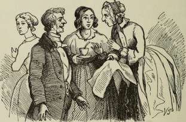